RockChip IQ tune flow
根據 Rockchip 官方文件（如 《Rockchip IQ Tools Guide》、《Rockchip Color Optimization Guide》等）的說明，Rockchip ISP 的圖像品質（IQ）調校與優化整體流程可以分為 四個核心階段
一、 調校環境準備與工程建立 (Preparation & Project Setup)
搭建連線環境：
將運行 PC（安裝 RKISP Tuner / IQ Tools）與運行 AIQ 框架的板卡設備（如 RK356X、RK3588、RV1106 等）連接至同一區域網絡。
在板卡端推送並啟動
rkaiq_tool_server服務應用，實現 Tuner 工具與設備端 AIQ 框架之間的通訊與數據交互。
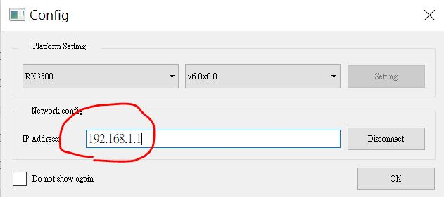
設定連線 進入 IQ Tool 的方式 : 1. 關閉原本rkaiq 3A server sudo killall rkaiq_3A_server 2. 建立兩個檔案關聯 sudo ln -s /tmp/UNIX.domain3 /tmp/UNIX.domain <-- for camera 31 3. 在HDMI 螢幕看到畫面,開啟 camera 影像 sudo gst-launch-1.0 v4l2src device=/dev/video31 ! video/x-raw,format=NV12,width=400,height=400,framerate=120/1 ! videoconvert ! autovideosink 4. 載入 rkaiq_tool_server 服務 sudo /data/rkaiq_tool_server-V2.0.5-20240930_174512-aarch64 -w 400 -h 400 -c /dev/video0 -s /dev/video31 5. 工具使用 : RKISP_Tuner_v2.3.6_Release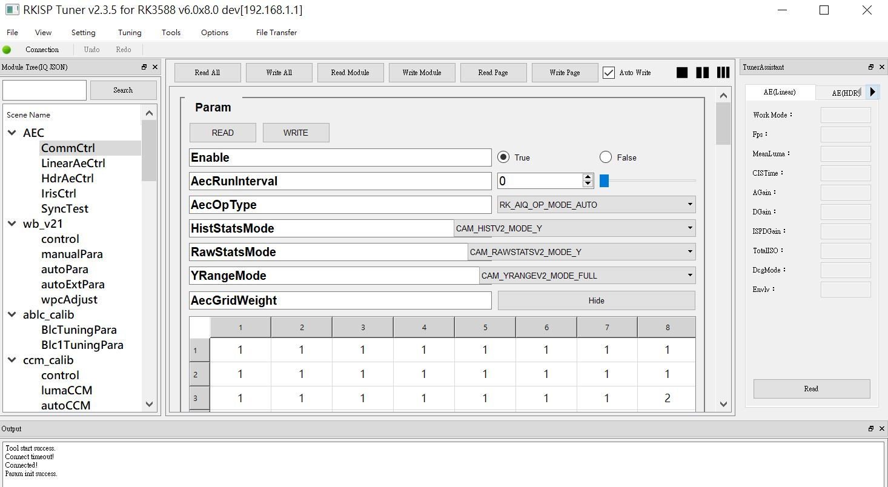
IQ 工具介面 設定 Sensor 資訊與生成基礎 IQ 檔：
在 Tuner 中填寫/匯入 Sensor Information（包含分辨率、曝光行/Gain 轉換註冊表的係數等 Datasheet 參數）。
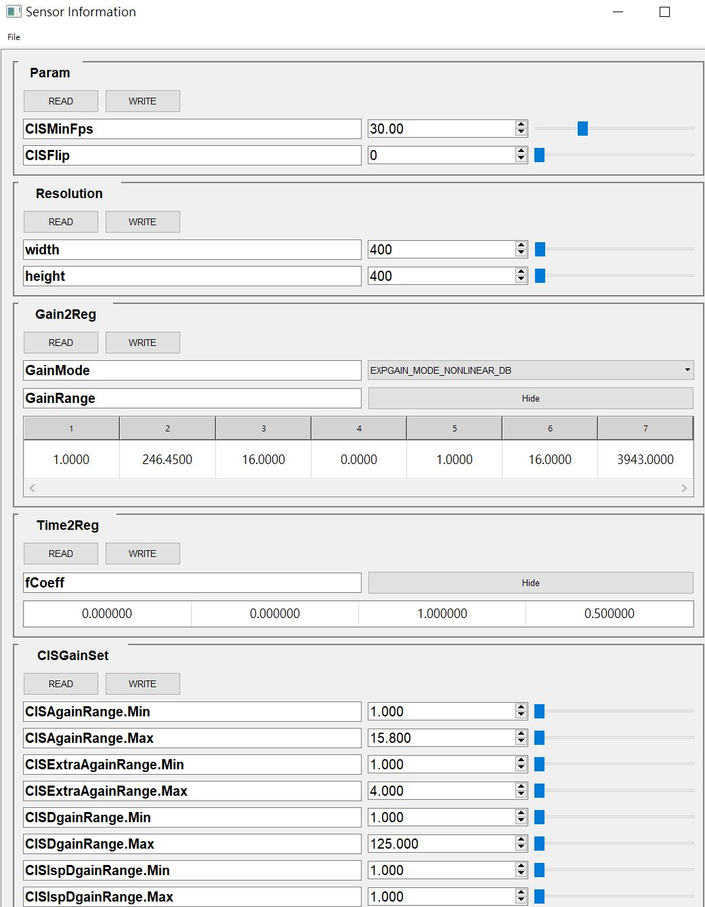
sensor參數 生成全新的
.json格式基礎 IQ 檔，該檔案記載了開放調優的所有 ISP 模組參數。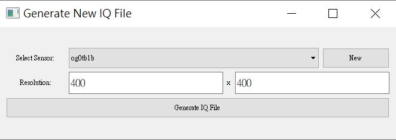
建立new json file
二、 Raw 圖像採集 (Raw Image Capture)
使用 Tuner 隨附的 RK Capture Tool 工具連接設備進行圖像採集：
曝光控制：支援手動曝光（Manual Exposure）與自動曝光（Auto Exposure），並可設定標準光源名稱（如 D65、D50、TL84、A、CWF、HZ、D75）與模組分類。
特定場景拍攝：
遮黑拍攝：用於黑電平校正。
加貼均光片/毛玻璃拍攝：在標準燈箱內拍攝均勻光場，用於鏡頭陰影校正。
拍攝標準圖卡：如 X-Rite 24 色卡（白平衡與 CCM 校正）、黑白/漸變卡（NR 噪聲曲線標定）、棋盤格（FEC/LDCH 鏡頭畸變校正）。
三、 基礎模組標定 (Basic Module Calibration)
基礎模組標定需遵循嚴格的模組依賴順序（後級模組依賴前級模組的標定結果：
$\text{黑電平 (BLC)} \longrightarrow \text{RawNR / GIC} \longrightarrow \text{靜態壞點 (DPCC)} \longrightarrow \text{鏡頭陰影 (LSC)} \longrightarrow \text{AWB / CCM} \longrightarrow \text{YUV NR / 3DNR} \longrightarrow \text{畸變校正 (LDCH/FEC)}$
黑電平校正 (BLC - Black Level Correction)：
步驟：全遮黑鏡頭，遍歷 Gain（1x, 2x, 4x, 8x...Max）拍攝 Raw 圖。
目的：扣除 Sensor 暗電流與 Base Pedestal 偏移量。所有後續模組標定皆需扣除此值。
Raw 域降噪與綠通道平衡 (Bayer NR / GIC)：
校正 Gr/Gb 不平衡（GIC），並對 Bayer 2DNR/3DNR 噪聲曲線進行採樣與標定。
目的：Raw 域降噪與 GIC 直接作用於未校正暗角的原始 Bayer 數據，可以在最前端擬合 Sensor 的基礎噪聲模型，避免 LSC 補償矩陣介入後改變噪聲的非均勻分佈。
RawNR（Raw 域靜態降噪）與 DPCC（靜態壞點標定）
步驟：標定基礎降噪曲線與校正 Sensor 上的固定亮/暗壞點。
目的：校正鏡頭引起的亮度暗角（Luma Shading）與邊角偏色（Color Shading）。
鏡頭陰影校正 (LSC - Lens Shading Correction)：
步驟：覆蓋均光片/毛玻璃，在 7 種標準光源（HZ, A, CWF, TL84, D50, D65, D75）下拍攝，將最大亮度控制在約 200（8-bit）。
目的：LSC 負責修復鏡頭邊角的暗角（Luma Shading）與偏色（Color Shading）。若未先完成 LSC，畫面四周與中心的色溫不一致，會直接破壞後續 AWB 的白點檢測與 CCM 24 色卡的採樣準確度。
自動白平衡標定 (AWB - Auto White Balance)：
依賴 LSC 標定結果。導入各光源下拍攝的 24 色卡 Raw 圖，自動/手動識別色塊，調整 UV 域、XY 域及 YUV 域的白點檢測邊界與框選條件。
色彩校正矩陣標定 (CCM - Color Correction Matrix)：
依賴 LSC 與 AWB 標定結果。在各標準光源下拍攝 24 色卡，設定目標 Gamma 曲線與指定色塊權重，計算生成不同色溫下的 3x3 CCM 矩陣及 Offset。
目的：AWB 與 CCM 需在黑電平扣除準確、LSC 校正完成的基礎上進行。通常在標準燈箱（7 種光源）下拍攝 24 色卡 RAW 圖，計算出白點條件框與 3 \times 3 色彩校正矩陣3。
亮度降噪標定 (YNR / MFNR)：
依賴 AWB 與 Raw 降噪。導入漸變卡/黑白卡 Raw 圖，標定不同 ISO 增益下的 Y 通道噪聲 Sigma 曲線。
目的：當 Gamma、AWB 與 CCM 確定後，影像的色彩與亮度對比度已固定，此時才能精確標定並調適 YUV 域的空域/時域降噪強度與噪聲模型。
畸變校正標定 (FEC / LDCH)：
導入棋盤格圖像，自動檢測內角點，計算鏡頭畸變參數並生成下採樣映射表（Mesh Map）。
目的：畸變校正涉及網格插值運算，放在最後階段可避免破壞前面 Raw 圖標定時的像素點陣對應關係。
四、 實時在線調優與風格化 (Online Parameter Tuning)
完成標定並寫入 IQ JSON 檔後，可連線進行在線實時微調（Online Tuning）：
3A 控制策略調優：
AEC：調整曝光 Route、目標亮度、抗閃爍（Anti-Flicker）、HDR 曝光比率與動態範圍壓縮（ADRC/AMerge）。
主要模組：AE (Auto Exposure)
步驟：
設定 AE 權限地圖（Weight Grid），將關注主體（如中央區域）權重調高。
設定 AE 曝光路由（AE Route），平衡曝光時間與 Gain 的分配。
設定目標亮度（Target Luma）以及 AE 收斂速度和平滑度。
AWB：微調偏色修正（CT Line / CRI Line）、白點權重與穩定度門檻（Tolerance）。
主要模組：AWB、CCM、3DLUT。
步驟：
使用前面標定的 AWB 與 CCM 參數，在燈箱測試 24 色卡（使用 imatest 軟體量測 Delta E 等指標）。
在實際自然場景（順光、背光、陰天、夕陽、夜間）進行微調。
若灰色區塊還原不準調整 AWB；若特定顏色過飽和或偏色，調整 CCM 矩陣或 3DLUT（針對記憶色如膚色、天空微調）。
CCM 手動微調：針對特定偏色場景（如膚色偏黃綠、紅色偏橘）手動修改 CCM 矩陣元素或重新調整色塊權重。
3DLUT 標定：在 LAB 色彩空間中進行高精度的 3D 色彩映射（如獨立增強植物綠色飽和度或優化人臉膚色，而不影響其他相近顏色）。
畫質與對比度微調：
主要模組：Demosaic、GIC、YNR、CNR、Sharpen、3DNR (BayerTNR)、DPCC。
步驟：
Demosaic / GIC：在 D65 光源（ISO 50）下拍攝解析度卡與星圖，調適去除偽色與網格，確保最大解析力。
Sharpen (銳化)：在降噪前先將銳化細節表現出來，確保線條清晰。
YNR / CNR (空域降噪)：分別針對亮度噪點（YNR）與彩噪（CNR）進行各 ISO 檔位的強度調適。
3DNR / BayerTNR (時域降噪)：調整多幀時域降噪，平衡動態物體的拖影（Ghosting）與靜止畫面的乾淨度。
DPCC (動態壞點校正)：在低照度（高 ISO）下調適動態壞點剔除強度。
ISO 聯動驗證：在各 ISO 照度下綜合測試並做最終微調，達成清晰度與噪聲的良好平衡。
離線仿真與部署 (Simulator & Deployment)：
利用離線仿真器（Simulator）對抓取的極端或異常 Raw 圖進行倒灌驗證。
確認無誤後，將最終的 IQ JSON 檔存檔，推送到設備端的指定目錄（如
/etc/iqfiles/）並重啟相機應用完成部署。
1. 調整項目內容 (可標定調整項目)
一、 BLC（黑電平校正 - Black Level Correction）
用於扣除 Sensor 本身因暗電流（Optical Black Level）及底層基底（Pedestal）導致的無光輸出電壓。BLC 是所有 ISP 模組標定的最首要步驟，若 BLC 計算不準確，會直接影響後續所有模組（如 LSC、AWB、CCM、NR 等）的標定結果。
1. 拍攝 BLC Raw 圖的要求與準備
由於黑電平主要受到 Gain（感光增益 / ISO） 與 溫度 的影響，拍攝時需要遍歷不同的 Gain 檔位：
完全遮黑：將相機模組放置於無光環境，並使用黑布或鏡頭蓋將鏡頭完全蓋緊，確保沒有任何外部光線進入。(注意：若設備板卡上有電源或狀態指示燈，需注意避免漏光)。
遍歷 Gain 檔位：需遍歷拍攝 Gain =
1x, 2x, 4x, 8x, 16x ... Max（按 2 的次方步長遞增至驅動支援的最大增益）。固定曝光時間：曝光時間不影響 BLC 標定，統一設定為 10ms （0.010s） 即可。
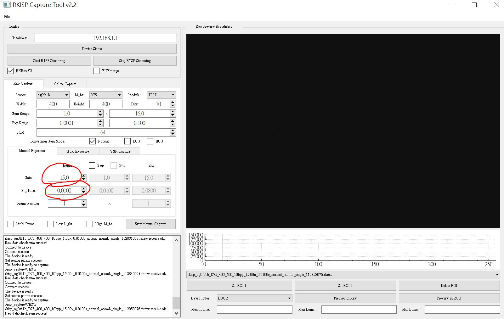
設定 gain & 設定固定曝光時間
2. 使用工具進行拍攝與標定步驟
步驟 1：使用 RK Capture Tool 拍攝 Raw 圖
開啟 RK Capture Tool 並連接至板卡設備，光源名稱（Light）選擇 unknow（無光），模組名稱（Module）選擇 BLC。
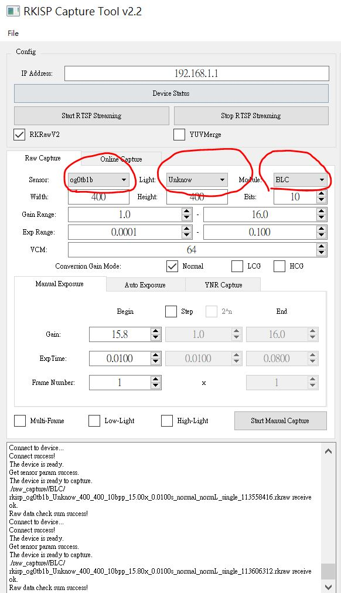
設定拍攝 RAW file 切換至 Manual Exposure 頁面，勾選 Step 與 2^n。
設定
Gain Begin = 1.0，Gain End = Max（依 Sensor 驅動支援的最大增益），ExpTime = 0.010。點擊 Start Manual Capture，工具會自動按照 2 的次方步長批量拍攝不同 Gain 檔位下的全黑 Raw 圖。
步驟 2：使用 RK Calibration Tool 計算標定參數
開啟 RK Calibration Tool，點擊左上角的 Edit Options，輸入 Raw 圖的解析度尺寸（Width / Height）、位寬（Bits）及 Bayer 陣列順序。
切換至 BLC 標籤頁，點擊下方的 Load Raw Files 載入剛剛拍攝的黑場 Raw 圖資料夾。
點擊 Calibrate 按鈕開始進行標定計算。
工具會繪製出各通道（R、Gr、Gb、B）黑電平隨 ISO 變化的曲線圖，並在下方表格中顯示各 ISO 檔位的黑電平數值。
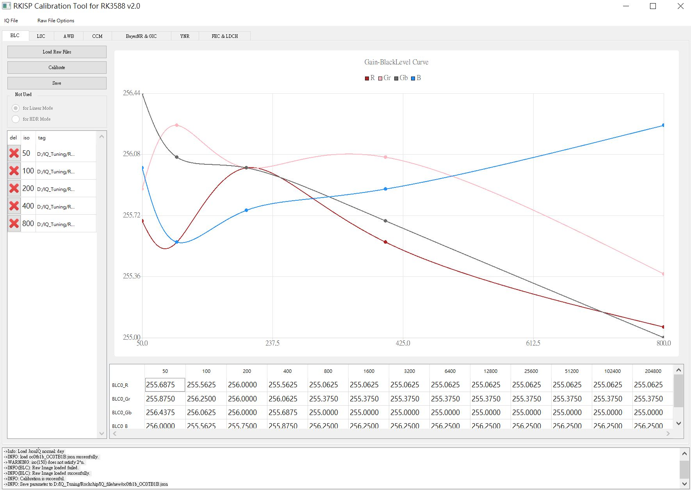
BLC標定計算結果 確認數值無異常後，點擊 Save 保存 BLC 參數至 IQ JSON 檔案中。
3. IQ JSON 檔案中的 BLC 參數結構
標定完成保存後，數值會寫入 JSON 檔的 ablc_calib -> BlcTuningPara 節點中。其結構如下：
"ablc_calib": {
"BlcTuningPara": {
"enable": 1,
"BLC_Data": {
"ISO": [8, 9],
"R_Channel": ,
"Gr_Channel": ,
"Gb_Channel": ,
"B_Channel":
}
}
}
說明：陣列中每個欄位填寫不同 ISO 等級下四通道（R, Gr, Gb, B）需要扣除的黑電平數值（例如 10-bit / 12-bit 規範下的 256 或 200）。
二、 Bayer NR / GIC(Raw 域降噪與綠通道平衡)
BayerNR (Raw 域降噪) 與 GIC (綠通道平衡校正 - Green Imbalance Correction) 是 Raw 域非常關鍵的兩個模組
GIC 模組：主要用於校正 Bayer 陣列中 Gr (R 行的 Green) 與 Gb (B 行的 Green) 兩個通道之間的響應不平衡。若 Gr/Gb 失衡，畫面在拉亮或高頻邊緣處容易出現像網格狀的偽影與噪點。
BayerNR 模組：包含 Bayer2DNR（空域降噪）與 BayerTNR/3DNR（時域降噪），基於 Sensor 的 Raw 域噪聲模型，在 Demosaic 之前進行初步的降噪處理。
在 RKISP Calibration Tool 中，GIC 的標定與 BayerNR 是完全集成在一起的，且共用同一頁面與同一套 Raw 圖資料。
1. 標定前 Raw 圖準備
GIC 與 BayerNR 的標定直接使用與先前 YNR/MFNR 標定相同的那套 Raw 圖數據：
圖卡與環境：在標準燈箱（TL84 或 CWF）下拍攝 24/28 色階灰階漸變卡。
拍攝方法：使用 RK Capture Tool 的
YNR Capture頁面，遍歷 Gain（1x, 2x, 4x, 8x, 16x...），分別拍攝低光 (Low-Light) 與高光 (High-Light) 的 single（單幀）與 multiple（32 幀疊加）Raw 圖。
2. 使用 RK Calibration Tool 進行標定計算
設定基礎選項：
開啟 RK Calibration Tool，點擊左上角
Edit Options輸入 Raw 圖的尺寸、Bit 數與 Bayer 格式。
進入標定頁面與載入檔案：
切換至 GIC & Bayer NR 標籤頁。
點擊 Load Raw Files 載入剛剛拍攝的所有 Low-Light / High-Light Raw 圖列表。
選擇 ROI 區塊：
點擊 Find ROI，確保紅框精確選中並覆蓋灰階卡上的各個色塊。
執行標定計算 (Calibrate)：
點擊 Calibrate 按鈕。
工具會同時擬合出 BayerNR 的 噪聲 Sigma 曲線 以及 GIC 模組的噪聲標準差參數 ( noiseCurve_0 , noiseCurve_1 , NoiseScale , NoiseBase )。
保存結果：
計算完成後右側會繪製出噪聲曲線，點擊 Save 保存結果至 IQ JSON 檔中（會更新
bayer2dnr_v2、bayertnr_v2與agic_calib節點）。
3. GIC 與 BayerNR 實景參數調優 (Tuning)
標定完成後，噪聲曲線已寫入 JSON，接下來可在在線調試介面中對兩者的控制參數進行微調：
1. GIC 關鍵控制參數微調 (agic_calib 節點)
GIC 的主要參數是用來控制「強弱」與「邊緣保護」，避免將真正的邊緣紋理誤判為 Gr/Gb 失衡：
enable：設為
1開啟 GIC 功能。globalStrength：全局控制調整 Gb/Gr 補償值的強度（取值
0.0 ~ 2.0，預設為1.0）。若畫面上網格狀偽影仍明顯，可適度調高此值。min_busy_thre：Busy 區域（高對比度不規則紋理）檢測能力（取值
0 ~ 1023）。值越大，被判斷為 Busy 的區域越多；對於 Busy 區域，GIC 會不做處理以保留細節。min_grad_thr1 / min_grad_thr2：非邊緣區域的數量閾值，用於控制 GIC 作用強度（取值
0 ~ 1023）。maxCorV / maxCorVboth：分別限制邊緣區域與平坦區域的 Gb/Gr 最大補償上限，防止過度校正產生拉絲感。
2. BayerNR (Bayer2DNR) 關鍵控制參數微調 (bayer2dnr_v2 節點)
Bayer2DNR 主要用於 Raw 域空域平滑，不宜開得過大，否則會直接損失後續的影像細節：
filter_strength：空域去噪力度參數（取值
0 ~ 16）。低 ISO 設小（如0.5 ~ 1.0），高 ISO 可適當調大。gauss_guide：高斯導向使能位，建議設為
1（開啟）。ratio：軟閾值比率（取值
0.0 ~ 1.0），值越小去噪越強，值越大保留越多噪點與細節。weight：滤波輸出權重（取值
0.0 ~ 1.0），值越大使用滤波結果越多，降噪感越強。
💡 總結作業流程
[載入灰階卡 Raw 圖] ➔ [GIC & Bayer NR 頁面框選 ROI] ➔ [Calibrate 計算] ➔ [Save 保存至 JSON] ➔ [線上微調 GIC 強度與 2DNR 力度]
完成 GIC & BayerNR 標定後，Raw 域的降噪與綠通道平衡即完全配置完畢！
三、 RawNR（Raw 域靜態降噪） 與 DPCC（壞點校正）
完成 BLC（黑電平） 與 LSC（鏡頭陰影校正） 標定後，接下來便是 RawNR（Raw 域靜態降噪） 與 DPCC（壞點校正） 的標定與調優。 這兩個模組直接作用於 Sensor 輸出的原始 Bayer/灰階 Raw 數據，對於維持畫面解析力與清除 Sensor 硬體瑕疵至關重要。
一、 RawNR（BayerNR / Raw 域靜態降噪標定）
1. 概念與作用
RawNR（在 ISP30 中對應 bayer2dnr_v2 空域降噪與 bayertnr_v2 時域降噪）主要用於在 Bayer Raw 域進行初步降噪。它的核心目標是透過拍攝不同 ISO 檔位下的灰階圖，標定出 Sensor 在不同亮度下的噪聲曲線（Noise Profile / Sigma Curve）。
2. RAW 數據採集步驟 (使用 RK Capture Tool)
RawNR 標定所需的 Raw 圖拍攝要求較為嚴格，需採用 YNR Capture 專用拍攝模式：
環境準備：
在標準燈箱（TL84 或 CWF 光源）中放置 24 色階/灰度漸變卡。
將相機對準漸變卡，使漸變卡儘量填滿畫面中心區域。
切換拍攝模式：
開啟 RK Capture Tool，選擇 YNR Capture 標籤頁，Module 名稱選擇 NR_Normal。
選擇 ROI 區域：
先拍攝一張預覽圖，在右側預覽視窗中右鍵選擇 Draw ROI，分別框選漸變卡上的最黑區塊（Black Block） 與 最亮區塊（White Block）。
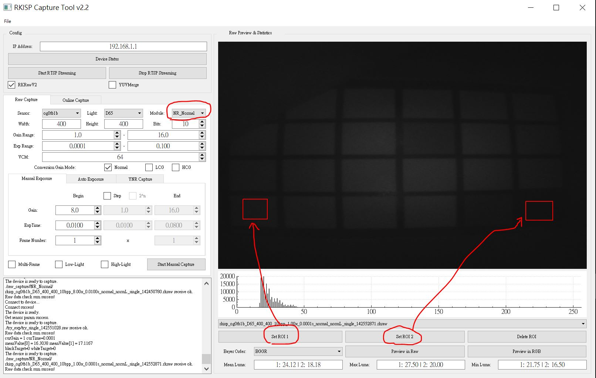
拍攝預覽圖
遍歷 Gain 拍攝（高光與低光檔位）：
需遍歷拍攝 Gain =
1x, 2x, 4x, 8x, 16x... Max。針對每一個 Gain 檔位，勾選 Multi-Frame，並分別拍攝：
低光（Low-Light）：調節曝光使最亮塊像素值達到約
30，最暗塊接近 BLC 值。高光（High-Light）：調節曝光使最亮塊像素值達到約
255（不過曝），最暗塊約在60~70。
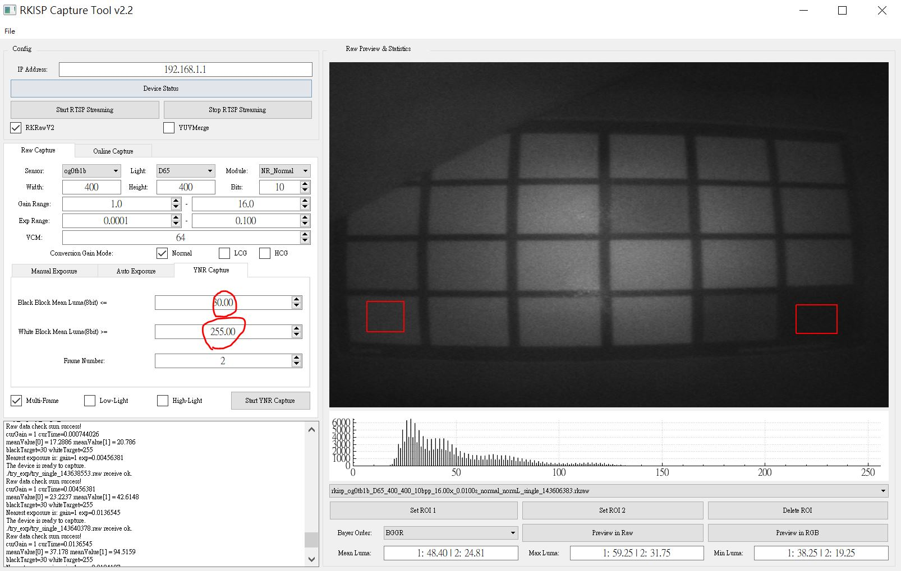
拍攝每一個Gain 檔位 工具會自動幫每個 Gain 產出
Single（單幀）與Multiple（多幀疊加）各一張 Raw 圖。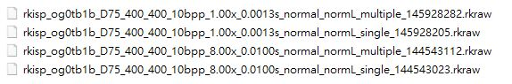
產生檔案
3. 標定計算步驟 (使用 RK Calibration Tool)
開啟 RK Calibration Tool，進入 GIC & Bayer NR 頁面。
點擊 Load Raw Files 導入剛拍攝的所有 NR Raw 圖。
點擊 Find ROI，框出圖片中灰階漸變卡的位置。
點擊 Calibrate 開始計算，工具會擬合出各 ISO 檔位下的 BayerNR Sigma 噪聲曲線。
確認曲線平滑無異常後，點擊 Save 將標定數據保存至 IQ JSON 檔案中（寫入
bayer2dnr_v2/bayertnr_v2節點）。
二、 DPCC（靜態與動態壞點校正）
1. 概念與作用
DPCC（Defect Pixel Cluster Correction）模組用於檢測並消除 Sensor 上的「靜態壞點」（常亮亮點、死黑點）以及高 ISO 下產生的「動態壞點」。
2. 工作模式與關鍵參數 (ISP30 架構)
在 IQ JSON 檔中的 adpcc_calib -> DpccTuningPara 節點下，主要支援以下工作模式：
Fast_mode（快速抽象模式 - 推薦使用）：
fast_mode_en: 1：開啟快速模式。
Single_level (0~10)：針對孤立單壞點進行濾除。數值越大去除力度越強（
0代表不處理）。Double_level (0~10)：針對相鄰的雙壞點（如 1x2、2x1 壞點簇）進行濾除。
Triple_level (0~10)：針對 3 個以上的壞點簇進行濾除。
"adpcc_calib": {
"DpccTuningPara": {
"Enable": 1,
"Fast_Mode": {
"Fast_mode_en": 1,
"Single_enable": 1,
"Double_enable": 1,
"Triple_enable": 1,
"Fast_Data": {
"ISO": [50],
"ISO_len": 1,
"Single_level": [1, 1, 1, 1, 1, 1, 1, 1, 1, 1, 1, 1, 1, 1, 1, 1, 1, 1, 1, 1, 1, 1, 1, 1, 1, 1, 1, 1, 1, 1, 1, 1, 1, 1, 1, 1, 1, 1, 1, 1, 1, 1, 1, 1, 1, 1, 1, 1, 1, 1, 1, 1, 1, 1, 1, 1, 1, 1, 1, 1, 1, 1, 1, 1, 1, 1, 1, 1, 1, 1, 1, 1, 1, 1, 1, 1, 1, 1, 1, 1, 1, 1, 1, 1, 1, 1, 1, 1, 1, 1, 1, 1, 1, 1, 1, 1, 1, 1, 1, 1],
"Single_level_len": 100,
"Double_level": [1, 1, 1, 1, 1, 1, 1, 1, 1, 1, 1, 1, 1, 1, 1, 1, 1, 1, 1, 1, 1, 1, 1, 1, 1, 1, 1, 1, 1, 1, 1, 1, 1, 1, 1, 1, 1, 1, 1, 1, 1, 1, 1, 1, 1, 1, 1, 1, 1, 1, 1, 1, 1, 1, 1, 1, 1, 1, 1, 1, 1, 1, 1, 1, 1, 1, 1, 1, 1, 1, 1, 1, 1, 1, 1, 1, 1, 1, 1, 1, 1, 1, 1, 1, 1, 1, 1, 1, 1, 1, 1, 1, 1, 1, 1, 1, 1, 1, 1, 1],
"Double_level_len": 100,
"Triple_level": [1, 1, 1, 1, 1, 1, 1, 1, 1, 1, 1, 1, 1, 1, 1, 1, 1, 1, 1, 1, 1, 1, 1, 1, 1, 1, 1, 1, 1, 1, 1, 1, 1, 1, 1, 1, 1, 1, 1, 1, 1, 1, 1, 1, 1, 1, 1, 1, 1, 1, 1, 1, 1, 1, 1, 1, 1, 1, 1, 1, 1, 1, 1, 1, 1, 1, 1, 1, 1, 1, 1, 1, 1, 1, 1, 1, 1, 1, 1, 1, 1, 1, 1, 1, 1, 1, 1, 1, 1, 1, 1, 1, 1, 1, 1, 1, 1, 1, 1, 1],
"Triple_level_len": 100
}
},Expert_mode（專家模式 - 高級微調）：
當 Fast_mode 無法滿足需求時使用，包含 6 種硬體檢測算法（
RK、LC、PG、RND、RG、RO）與 4 種判定方案（fix_set、set1~3）。
"Expert_Mode": {
"stage1_Enable": 1,
"grayscale_mode": 0,
"dpcc_out_sel": 1,
"stage1_g_3x3": 0,
"stage1_rb_3x3": 0,
"stage1_inc_rb_center": 1,
"stage1_inc_g_center": 1,
"rk_out_sel": 0,
"SetEnable": {
"ISO": [50, 100, 200, 400, 800, 1600, 3200, 6400, 12800, 25600, 51200, 102400, 204800],
"fix_set": [0, 0, 0, 0, 0, 0, 0, 0, 0, 0, 0, 0, 0],
"set1": [0, 0, 0, 0, 0, 0, 0, 0, 0, 0, 0, 0, 0],
"set2": [0, 0, 0, 0, 0, 0, 0, 0, 0, 0, 0, 0, 0],
"set3": [0, 0, 0, 0, 0, 0, 0, 0, 0, 0, 0, 0, 0]
},
"set1": {
"RK": {
"RK_enable": [0, 0, 0, 0, 0, 0, 0, 0, 0, 0, 0, 0, 0],
"rb_sw_mindis": [0, 0, 0, 0, 0, 0, 0, 0, 0, 0, 0, 0, 0],
"g_sw_mindis": [0, 0, 0, 0, 0, 0, 0, 0, 0, 0, 0, 0, 0],
"sw_dis_scale_min": [0, 0, 0, 0, 0, 0, 0, 0, 0, 0, 0, 0, 0],
"sw_dis_scale_max": [0, 0, 0, 0, 0, 0, 0, 0, 0, 0, 0, 0, 0]
},
"LC": {
"LC_enable": [1, 1, 1, 1, 1, 1, 1, 1, 1, 1, 1, 1, 1],
"rb_line_thr": [8, 8, 8, 8, 8, 8, 8, 8, 8, 8, 8, 8, 8],
"g_line_thr": [8, 8, 8, 8, 8, 8, 8, 8, 8, 8, 8, 8, 8],
"rb_line_mad_fac": [4, 4, 4, 4, 4, 4, 4, 4, 4, 4, 4, 4, 4],
"g_line_mad_fac": [4, 4, 4, 4, 4, 4, 4, 4, 4, 4, 4, 4, 4]
},
"PG": {
"PG_enable": [1, 1, 1, 1, 1, 1, 1, 1, 1, 1, 1, 1, 1],
"rb_pg_fac": [4, 4, 4, 4, 4, 4, 4, 4, 4, 4, 4, 4, 4],
"g_pg_fac": [3, 3, 3, 3, 3, 3, 3, 3, 3, 3, 3, 3, 3]
},
"RND": {
"RND_enable": [1, 1, 1, 1, 1, 1, 1, 1, 1, 1, 1, 1, 1],
"rb_rnd_thr": [8, 8, 8, 8, 8, 8, 8, 8, 8, 8, 8, 8, 8],
"g_rnd_thr": [8, 8, 8, 8, 8, 8, 8, 8, 8, 8, 8, 8, 8],
"rb_rnd_offs": [3, 3, 3, 3, 3, 3, 3, 3, 3, 3, 3, 3, 3],
"g_rnd_offs": [3, 3, 3, 3, 3, 3, 3, 3, 3, 3, 3, 3, 3]
},
"RG": {
"RG_enable": [1, 1, 1, 1, 1, 1, 1, 1, 1, 1, 1, 1, 1],
"rb_rg_fac": [8, 8, 8, 8, 8, 8, 8, 8, 8, 8, 8, 8, 8],
"g_rg_fac": [8, 8, 8, 8, 8, 8, 8, 8, 8, 8, 8, 8, 8]
},
"RO": {
"RO_enable": [1, 1, 1, 1, 1, 1, 1, 1, 1, 1, 1, 1, 1],
"rb_ro_lim": [1, 1, 1, 1, 1, 1, 1, 1, 1, 1, 1, 1, 1],
"g_ro_lim": [1, 1, 1, 1, 1, 1, 1, 1, 1, 1, 1, 1, 1]
}
},Sensor_dpcc：
若 Sensor 晶片硬體本身支援內建壞點修復，可在此配置
max_level、level_single等參數交由 Sensor 端處理。
"Sensor_dpcc": {
"sensor_dpcc_auto_en": 1,
"max_level": 1,
"SensorDpcc_Data": {
"ISO": [50],
"ISO_len": 1,
"level_single": [1, 1, 1, 1, 1, 1, 1, 1, 1, 1, 1, 1, 1, 1, 1, 1, 1, 1, 1, 1, 1, 1, 1, 1, 1, 1, 1, 1, 1, 1, 1, 1, 1, 1, 1, 1, 1, 1, 1, 1, 1, 1, 1, 1, 1, 1, 1, 1, 1, 1, 1, 1, 1, 1, 1, 1, 1, 1, 1, 1, 1, 1, 1, 1, 1, 1, 1, 1, 1, 1, 1, 1, 1, 1, 1, 1, 1, 1, 1, 1, 1, 1, 1, 1, 1, 1, 1, 1, 1, 1, 1, 1, 1, 1, 1, 1, 1, 1, 1, 1],
"level_single_len": 100,
"level_multiple": [1, 1, 1, 1, 1, 1, 1, 1, 1, 1, 1, 1, 1, 1, 1, 1, 1, 1, 1, 1, 1, 1, 1, 1, 1, 1, 1, 1, 1, 1, 1, 1, 1, 1, 1, 1, 1, 1, 1, 1, 1, 1, 1, 1, 1, 1, 1, 1, 1, 1, 1, 1, 1, 1, 1, 1, 1, 1, 1, 1, 1, 1, 1, 1, 1, 1, 1, 1, 1, 1, 1, 1, 1, 1, 1, 1, 1, 1, 1, 1, 1, 1, 1, 1, 1, 1, 1, 1, 1, 1, 1, 1, 1, 1, 1, 1, 1, 1, 1, 1],
"level_multiple_len": 100
}
}3. 壞點標定與實用調優步驟
DPCC 不需要複雜的 Raw 圖計算，通常採 「實測與等級微調」 方式進行：
尋找與觀察壞點：
靜態亮點（Hot Pixels）：全遮黑鏡頭，將 Gain/ISO 拉到最大（如 Gain=16x/32x），觀察畫面上是否有固定不變的白色亮點。
靜態暗點（Dark Pixels）：對準均勻高光白牆/燈箱，觀察畫面上是否有固定不變的死黑點。
Fast_mode 調優（建議做法）：
在 JSON 檔中確認 Fast_mode_enable: 1。
高 ISO 檔位分段設定：低 ISO 下壞點不敏感，
Single_level可設為1~3；在高 ISO（如 ISO 3200/6400）環境下，將Single_level逐步調高至5~8。若發現有連續相鄰壞點未被剔除，可將
Double_level設為3~5。
注意事項：
避免過度校正：
Single_level等級切勿設得過高（如直接開到 10），否則 ISP 會將畫面中的高頻細節（如星星、細微線條紋理）誤判為壞點而抹除。
標定與調優順序總結
[BLC 黑電平] ➔ [LSC 鏡頭陰影] ➔ [RawNR 噪聲曲線標定] ➔ [DPCC 壞點消除] ➔ [AWB / CCM / YUV 降噪]
四、 LSC（鏡頭陰影校正 - Lens Shading Correction）
主要用於修復由於鏡頭凸透鏡光學特性導致的邊角亮度衰減（Luma Shading），以及因紅外截止濾光片（IR-Cut）或微透鏡 CRA 不匹配引起的邊角偏色（Color Shading）。ISP 會在影像上記錄 17 \times 17 的網格點陣列，分別對 R、Gr、Gb、B 四個通道獨立進行增益補償。
一、 標定前置要求與環境準備
黑電平（BLC）必須先標定準確：LSC 計算屬於乘法增益補償，若 BLC 數值有偏差，經 LSC 增益放大後會嚴重破壞畫面暗部的亮度與色彩。
標準拍攝環境與配件：
燈箱與光源：需在標準光源燈箱中拍攝 7 種光源（HZ、A、CWF、TL84、D50、D65、D75）。
均光配件：使用毛玻璃或均光片緊貼覆蓋鏡頭（或使用 DNP 燈箱/積分球），確保進入鏡頭的光線絕對均勻平坦。
防閃爍與曝光規範：
曝光時間建議設為 10ms 的整數倍 以防止交流電閃爍（Flicker）。
Raw 圖的最大亮度需控制在 200 左右（8-bit 規範，約 80% 飽和度），且最小亮度需明顯大於 BLC 黑電平值。
二、 RAW 圖拍攝與工具標定步驟
使用 RK Capture Tool 自動擷取 Raw 圖
在 RK Capture Tool 連接板卡，Module 選擇 LSC。
放置均光片並切換燈箱至第一種光源（如 HZ）。
切換至 Auto Exposure 頁面，勾選 Search Exposure By Max Luma(8bit)（目標最大亮度設為 200 ± 10%）與 Anti-Flicker(60Hz)。
點擊 Start Auto Capture，工具會自動尋找合適曝光並拍攝 Raw 圖。
依序切換其餘 6 種光源（A、CWF、TL84、D50、D65、D75），修改對應 Light 名稱後拍攝完成。
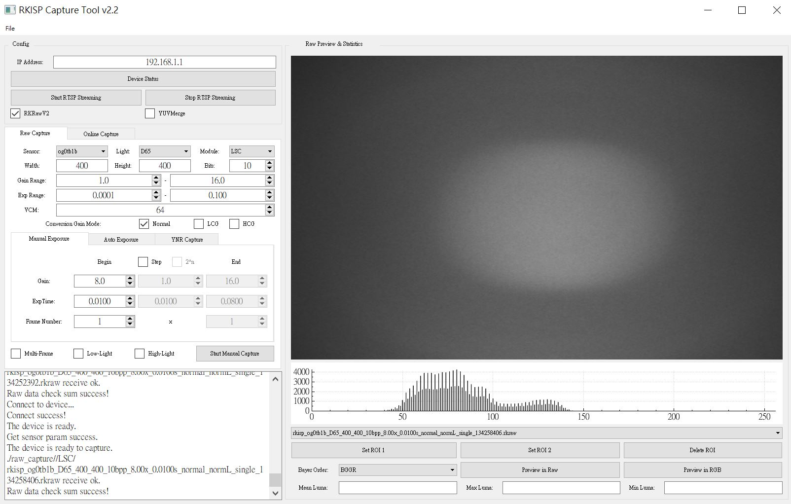
LSC拍攝RAW 設定 使用 RK Calibration Tool 計算校正矩陣
開啟 RK Calibration Tool，在 Edit Options 設定 Raw 圖解析度、Bit 數與 Bayer 順序。
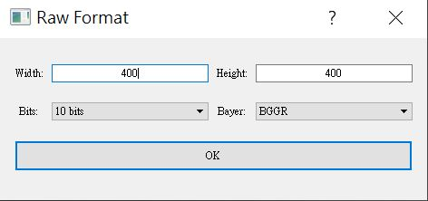
LSC設定影像參數 進入 LSC 頁面，點擊 Load Raw Files 導入剛拍攝的 7 張 Raw 圖。
全補償標定：將 Light Fall off 設定為 100%，點擊 Calibrate 開始計算，完成後點擊 Save 存檔。
衰減組標定：將 Light Fall off 修改為 70%（保留 30% 自然暗角，避免邊角過度放大噪聲），重新點擊 Calibrate 並保存。
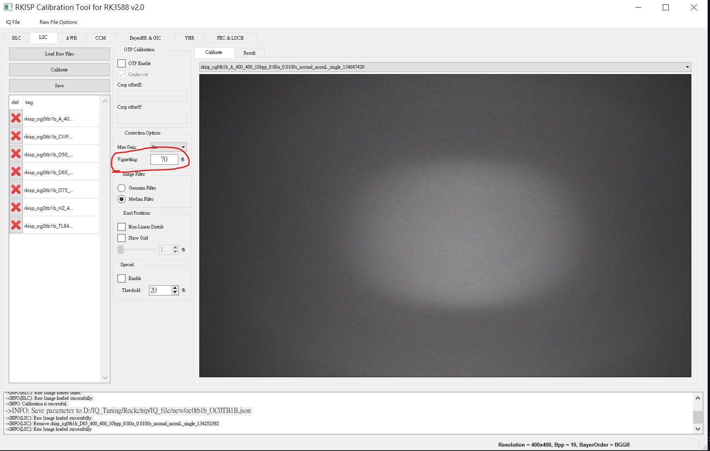
LSC進行校正 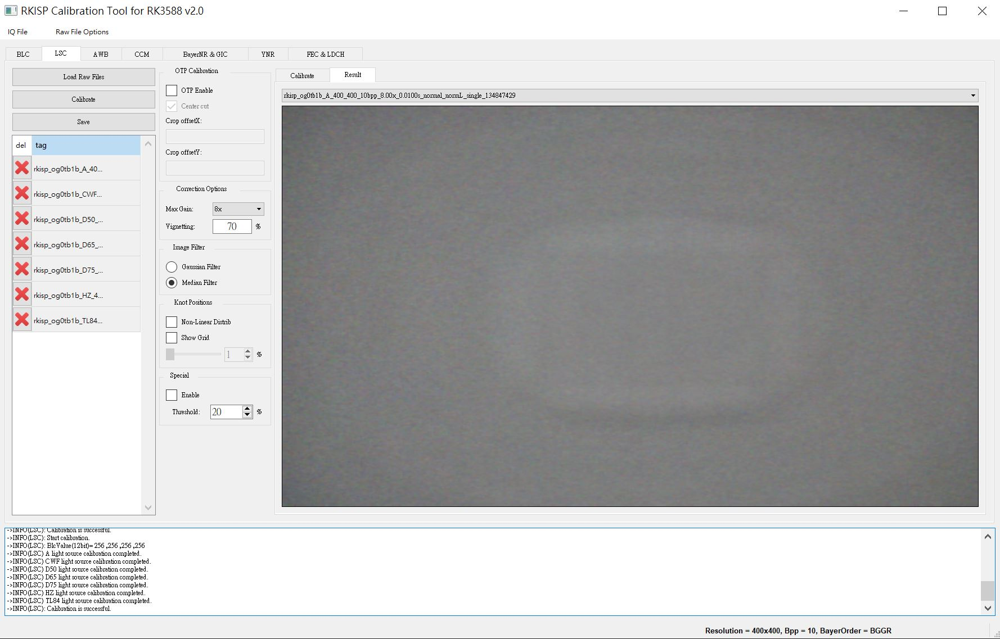
LSC校正結果
三、 IQ JSON 檔中的參數架構與實景調優
標定結果會寫入 IQ JSON 檔的 lsc_v2 節點中，包含三大核心結構：
common（網格分割）：
enable: 1 開啟 LSC 功能，resolutionAll 定義解析度（如 400x400）與水平/垂直 16 個區塊的比重（lsc_sect_size_x / y）。
"common": {
"enable": 1,
"resolutionAll": [{
"name": "400x400",
"lsc_sect_size_x": [25, 25, 25, 25, 25, 25, 25, 25, 25, 25, 25, 25, 25, 25, 25, 25],
"lsc_sect_size_y": [25, 25, 25, 25, 25, 25, 25, 25, 25, 25, 25, 25, 25, 25, 25, 25]
}],
"resolutionAll_len": 1
},alscCoef（光源策略與 ISO 聯動）：
illAll：定義不同光源下觸發的白平衡增益區間（wbGain）。
"illAll": [{ "usedForCase": 0, "name": "A", "wbGain": [1.0066, 0.9955], "tableUsed": [{ "name": "A_70" }],vig (ISO 聯動衰減)：為防止低照度（高 ISO/Gain）環境下 LSC 將邊角噪聲過度放大，可透過 vig 陣列（如 ....）使 LSC 補償強度隨 ISO 升高而平滑降低。
"tableUsed_len": 1, "gains": [1, 4, 8, 16], "gains_len": 4, "vig": [100, 100, 90, 70], "vig_len": 4 },tbl -> tableAll（17x17 增益矩陣）：包含 R、Gr、Gb、B 四個通道各 289 個（17 \times 17）校正係數（uCoeff）...。💡
"tbl": { "tableAll": [{ "name": "400x400_A_70", "resolution": "400x400", "illumination": "A", "vignetting": 70, "lsc_samples_red": { "uCoeff": [3793, 3341, 2907, 2519, 2322, 2163, 1982, 1921, 1809, 1785, 1872, 1947, 2071, 2218, 2335, 2586, 2925, 3556, 3228, 2763, 2436, 2264, 2038, 1879, 1828, 1791, 1774, 1814, 1865, 1979, 2118, 2326, 2597, 2818, 3379, 3040, 2683, 2391, 2099, 1976, 1855, 1822, 1786, 1743, 1783, 1846, 1920, 2040, 2243, 2526, 2721, 3302, 2940, 2557, 2293, 2143, 1974, 1881, 1792, 1745, 1736, 1761, 1849, 1932, 2046, 2218, 2417, 2765, 3171, 2916, 2527, 2292, 2113, 1911, 1798, 1706, 1656, 1655, 1707, 1795, 1910, 2035, 2193, 2412, 2694, 3239, 2897, 2463, 2283, 2072, 1870, 1650, 1433, 1281, 1266, 1371, 1591, 1827, 2037, 2259, 2453, 2689, 3112, 2853, 2507, 2290, 2016, 1736, 1407, 1232, 1113, 1105, 1177, 1332, 1667, 1971, 2222, 2443, 2638, 3198, 2869, 2520, 2278, 2001, 1651, 1310, 1168, 1092, 1082, 1137, 1226, 1515, 1924, 2213, 2481, 2699, 3055, 2823, 2510, 2261, 1963, 1564, 1262, 1119, 1057, 1057, 1115, 1201, 1438, 1883, 2186, 2461, 2613, 3011, 2802, 2468, 2237, 1946, 1558, 1235, 1101, 1030, 1024, 1074, 1167, 1426, 1845, 2134, 2433, 2642, 3080, 2659, 2395, 2177, 1931, 1588, 1252, 1115, 1033, 1026, 1083, 1182, 1473, 1853, 2127, 2351, 2554, 2988, 2669, 2357, 2153, 1889, 1686, 1335, 1126, 1034, 1030, 1089, 1235, 1586, 1842, 2058, 2279, 2466, 2951, 2636, 2309, 2060, 1888, 1738, 1562, 1325, 1171, 1142, 1255, 1470, 1708, 1861, 2032, 2205, 2442, 2866, 2642, 2237, 2056, 1883, 1733, 1631, 1555, 1514, 1494, 1550, 1623, 1708, 1857, 1974, 2138, 2457, 2943, 2610, 2264, 1986, 1815, 1674, 1586, 1543, 1513, 1526, 1544, 1596, 1696, 1797, 1924, 2110, 2381, 2820, 2550, 2238, 1989, 1765, 1629, 1545, 1485, 1459, 1439, 1482, 1540, 1643, 1723, 1917, 2159, 2368, 2806, 2524, 2209, 1995, 1767, 1647, 1485, 1441, 1408, 1440, 1463, 1519, 1636, 1771, 1962, 2136, 2360] }, "lsc_samples_greenR": { "uCoeff": [3714, 3369, 2890, 2602, 2269, 2139, 2025, 1913, 1838, 1794, 1857, 1947, 2068, 2180, 2407, 2591, 2950, 3685, 3255, 2787, 2540, 2238, 2064, 1933, 1880, 1786, 1809, 1815, 1894, 1995, 2125, 2370, 2571, 2842, 3553, 3086, 2690, 2373, 2176, 2018, 1892, 1817, 1807, 1784, 1798, 1832, 1952, 2057, 2217, 2504, 2762, 3383, 3005, 2593, 2347, 2132, 1965, 1888, 1814, 1740, 1745, 1769, 1857, 1948, 2053, 2237, 2436, 2770, 3269, 2959, 2520, 2300, 2131, 1974, 1800, 1726, 1699, 1668, 1703, 1776, 1910, 2043, 2222, 2432, 2666, 3195, 2979, 2537, 2258, 2079, 1857, 1670, 1457, 1304, 1274, 1360, 1588, 1856, 2011, 2223, 2446, 2679, 3253, 2876, 2598, 2308, 2032, 1795, 1442, 1249, 1145, 1107, 1172, 1311, 1658, 1971, 2230, 2424, 2693, 3201, 2839, 2568, 2296, 2017, 1663, 1335, 1166, 1093, 1084, 1144, 1227, 1518, 1932, 2200, 2514, 2672, 3145, 2811, 2517, 2279, 1987, 1613, 1266, 1130, 1065, 1056, 1109, 1200, 1446, 1898, 2184, 2467, 2666, 3099, 2825, 2501, 2245, 2001, 1591, 1240, 1105, 1037, 1039, 1085, 1180, 1432, 1860, 2142, 2428, 2601, 3042, 2762, 2466, 2195, 1954, 1638, 1266, 1117, 1039, 1024, 1085, 1186, 1434, 1853, 2136, 2383, 2575, 3054, 2722, 2376, 2162, 1927, 1724, 1339, 1151, 1044, 1037, 1086, 1245, 1553, 1842, 2092, 2264, 2460, 3080, 2755, 2340, 2096, 1926, 1740, 1596, 1325, 1183, 1146, 1258, 1483, 1698, 1848, 2040, 2201, 2462, 2929, 2729, 2277, 2100, 1913, 1760, 1645, 1593, 1526, 1530, 1563, 1636, 1723, 1821, 2008, 2156, 2409, 2967, 2680, 2283, 2003, 1816, 1705, 1610, 1575, 1521, 1529, 1557, 1609, 1698, 1826, 1908, 2106, 2400, 2904, 2586, 2267, 2013, 1753, 1649, 1563, 1488, 1470, 1469, 1490, 1574, 1645, 1745, 1941, 2166, 2388, 2957, 2625, 2324, 1993, 1795, 1654, 1535, 1449, 1415, 1425, 1480, 1522, 1650, 1785, 1988, 2188, 2393] }, "lsc_samples_greenB": { "uCoeff": [3678, 3398, 2832, 2570, 2341, 2129, 1989, 1920, 1846, 1844, 1857, 1938, 2022, 2214, 2407, 2591, 2885, 3719, 3180, 2805, 2498, 2294, 2083, 1957, 1836, 1799, 1809, 1829, 1880, 2022, 2135, 2357, 2602, 2944, 3464, 3065, 2690, 2410, 2136, 2009, 1900, 1830, 1781, 1804, 1798, 1846, 1952, 2057, 2239, 2532, 2780, 3356, 3025, 2564, 2334, 2132, 1981, 1903, 1801, 1753, 1751, 1782, 1857, 1957, 2053, 2204, 2410, 2752, 3245, 2940, 2520, 2311, 2112, 1927, 1807, 1720, 1676, 1663, 1703, 1797, 1925, 2061, 2232, 2432, 2699, 3242, 2922, 2483, 2291, 2062, 1885, 1670, 1469, 1307, 1290, 1379, 1604, 1843, 2063, 2255, 2446, 2779, 3182, 2876, 2542, 2297, 2050, 1763, 1434, 1227, 1137, 1119, 1194, 1332, 1669, 1971, 2240, 2503, 2693, 3179, 2856, 2527, 2286, 1992, 1659, 1324, 1163, 1101, 1089, 1152, 1240, 1542, 1932, 2210, 2528, 2721, 3080, 2811, 2531, 2258, 1971, 1592, 1256, 1138, 1065, 1063, 1119, 1206, 1450, 1884, 2184, 2467, 2650, 3015, 2775, 2488, 2234, 1953, 1566, 1233, 1115, 1035, 1035, 1097, 1191, 1441, 1874, 2171, 2428, 2617, 2981, 2728, 2441, 2205, 1946, 1601, 1266, 1107, 1037, 1032, 1083, 1201, 1450, 1861, 2116, 2347, 2590, 2991, 2706, 2352, 2162, 1919, 1707, 1335, 1140, 1047, 1024, 1102, 1236, 1584, 1870, 2102, 2275, 2515, 2954, 2706, 2328, 2104, 1903, 1759, 1601, 1332, 1169, 1143, 1261, 1478, 1716, 1862, 2040, 2201, 2449, 2889, 2695, 2255, 2045, 1883, 1748, 1628, 1567, 1531, 1525, 1572, 1630, 1723, 1836, 2008, 2135, 2463, 2885, 2631, 2260, 1968, 1845, 1687, 1621, 1580, 1531, 1534, 1562, 1598, 1698, 1819, 1941, 2158, 2470, 2925, 2602, 2280, 2013, 1773, 1649, 1553, 1521, 1470, 1474, 1504, 1574, 1675, 1731, 1916, 2155, 2415, 2829, 2576, 2228, 1958, 1824, 1661, 1506, 1449, 1450, 1422, 1489, 1517, 1638, 1785, 1952, 2143, 2393] }, "lsc_samples_blue": { "uCoeff": [3685, 3404, 2958, 2623, 2359, 2164, 2056, 1908, 1849, 1804, 1884, 1967, 2082, 2174, 2346, 2596, 3001, 3727, 3288, 2847, 2517, 2264, 2069, 1937, 1869, 1809, 1813, 1833, 1876, 1990, 2170, 2401, 2576, 2847, 3441, 3115, 2728, 2416, 2160, 2031, 1896, 1827, 1811, 1775, 1775, 1887, 1940, 2062, 2233, 2509, 2786, 3336, 2990, 2584, 2363, 2126, 2010, 1884, 1811, 1769, 1729, 1779, 1854, 1937, 2058, 2263, 2455, 2740, 3204, 3005, 2553, 2304, 2154, 1954, 1816, 1730, 1674, 1719, 1712, 1813, 1914, 2092, 2259, 2424, 2722, 3225, 2946, 2515, 2318, 2093, 1868, 1685, 1448, 1293, 1303, 1386, 1602, 1853, 2024, 2238, 2465, 2700, 3166, 2900, 2533, 2280, 2020, 1805, 1426, 1242, 1145, 1112, 1194, 1314, 1661, 1974, 2224, 2455, 2714, 3118, 2880, 2519, 2313, 2021, 1690, 1330, 1182, 1105, 1091, 1151, 1248, 1535, 1967, 2215, 2493, 2678, 3108, 2834, 2536, 2273, 2008, 1585, 1265, 1133, 1074, 1068, 1117, 1205, 1445, 1865, 2169, 2513, 2640, 3106, 2831, 2467, 2219, 1965, 1594, 1233, 1118, 1043, 1032, 1092, 1182, 1428, 1863, 2156, 2432, 2717, 3048, 2750, 2484, 2230, 1935, 1631, 1259, 1119, 1041, 1037, 1085, 1192, 1441, 1872, 2140, 2375, 2595, 3061, 2745, 2443, 2196, 1931, 1681, 1345, 1159, 1034, 1024, 1102, 1238, 1552, 1867, 2088, 2258, 2520, 3001, 2761, 2344, 2118, 1915, 1776, 1568, 1328, 1175, 1157, 1267, 1494, 1708, 1866, 2035, 2206, 2413, 2954, 2669, 2281, 2095, 1887, 1758, 1648, 1570, 1529, 1523, 1551, 1623, 1714, 1825, 1961, 2160, 2482, 2932, 2652, 2323, 1990, 1827, 1721, 1630, 1569, 1543, 1546, 1555, 1623, 1719, 1787, 1936, 2110, 2419, 2996, 2640, 2284, 2036, 1776, 1646, 1562, 1500, 1456, 1472, 1493, 1556, 1666, 1734, 1887, 2148, 2365, 2963, 2631, 2291, 2052, 1813, 1670, 1529, 1460, 1426, 1437, 1478, 1529, 1659, 1761, 1974, 2104, 2343] }
固定一組 LSC 的快捷配置技巧若只需套用固定一組 LSC 數據：
將 illAll 中的 wbGain 設為 [0.0, 1000.0]，確保不論色溫如何變化都能 100% 命中。
確保 illAll -> tableUsed -> name 與 tableAll -> name 的表名完全一致（如均設為 "FIXED_100"），並將 illAll_len 與 tableAll_len 均修改為 1。
五、 AWB（自動白平衡 - Auto White Balance）& CCM (色彩校正矩陣標定 - Color Correction Matrix)
AWB（自動白平衡） 與 CCM（色彩校正矩陣） 是決定影像色彩還原準確度的核心模組。這兩個模組通常在完成 BLC (黑電平) 與 LSC (鏡頭陰影校正) 後共同進行標定。
一、 RAW 圖拍攝規範 (AWB / CCM 共用)
標定 AWB 與 CCM 需要在標準實驗室環境下拍攝 24 色卡 RAW 圖：
環境與設備準備：
標準光源燈箱：包含 7 種標準光源（HZ、A、CWF、TL84、D50、D65、D75）。
X-Rite 24 色卡：將色卡放置於燈箱背景牆中心，確保兩側光源照射均勻。
構圖與擺放：
調整相機距離，使 24 色卡在畫面中的占比大於 1/9，且四周不要有強烈雜光干擾。
曝光控制：
開啟 RK Capture Tool，Module 選擇 CCM_AWB。
勾選 Anti-Flicker (60Hz) 避免交流電閃爍。
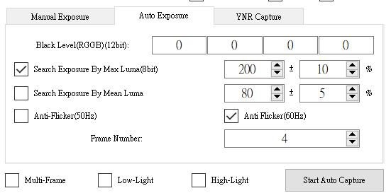
Anti-Flicker (60Hz) 調整曝光時間與增益，使 24 色卡中最亮的白色塊（第 19 號色塊）最大亮度控制在 150 ~ 240（8-bit 規範，建議約 200），且絕不能過曝。
批量拍攝 7 種光源：
依次切換燈箱至 7 種光源（HZ, A, CWF, TL84, D50, D65, D75），同步修改工具中的 Light 名稱後點擊 Start Auto Capture 拍攝。
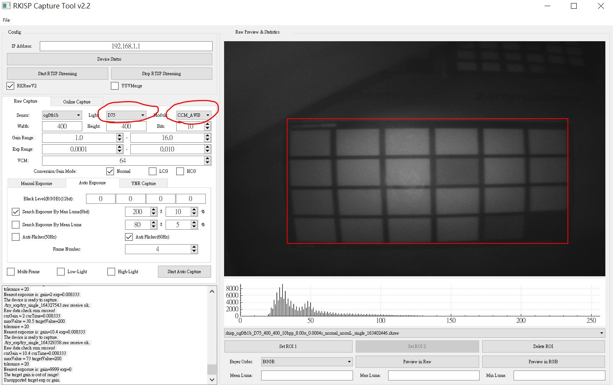
依次切換燈箱色溫
二、 AWB (自動白平衡) 標定步驟
AWB 標定的目的是建立不同光源下的白點條件框（WPC）與標準白平衡增益（wbGain）。
導入 Raw 圖：
開啟 RK Calibration Tool，進入 AWB 頁面，點擊 Load Raw Files 載入剛剛拍攝的 7 張 24 色卡 Raw 圖。
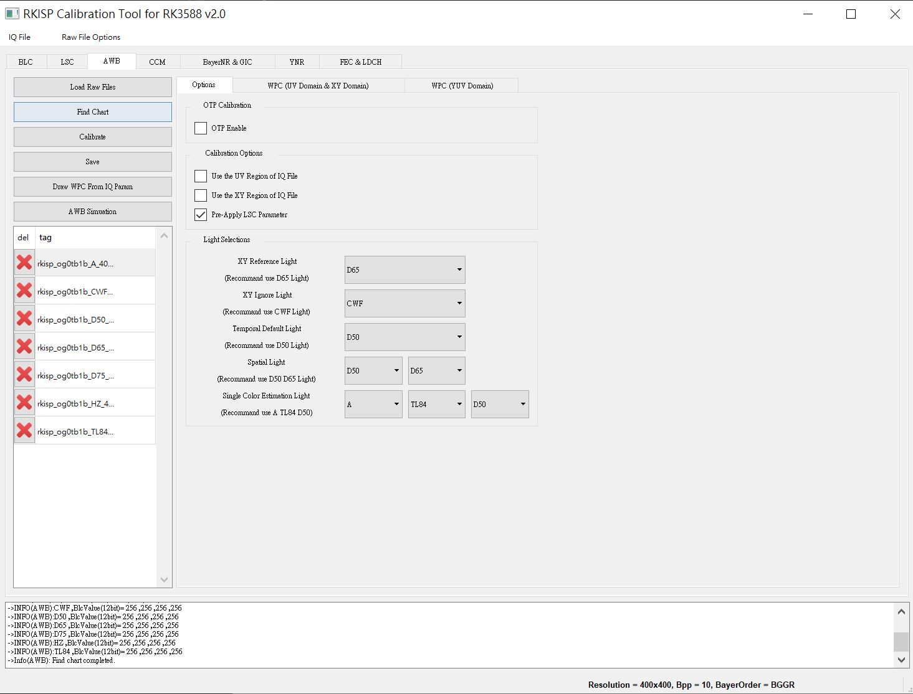
Load Raw Files
色塊自動識別 (Find Chart)：
點擊 Find Chart，在畫面上框選 24 色卡的四角（第 1、6、19、20 號色塊中心）。
工具會自動批量識別所有光源圖中的色塊位置。若有個別光源（如 TL84）定位偏移，可切換模式為 Find current chart 單獨校正點位。
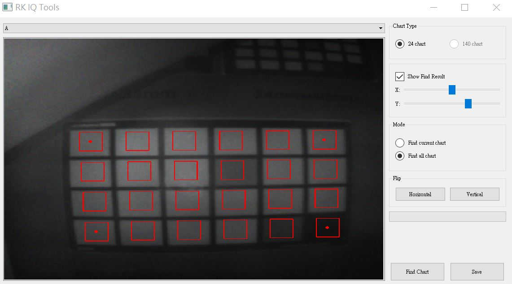
識別色塊
計算白點條件 (Calibrate)：
點擊 Calibrate 開始計算，工具會在 UV 域與 XY 域自動繪製出各光源的初始白點條件框。
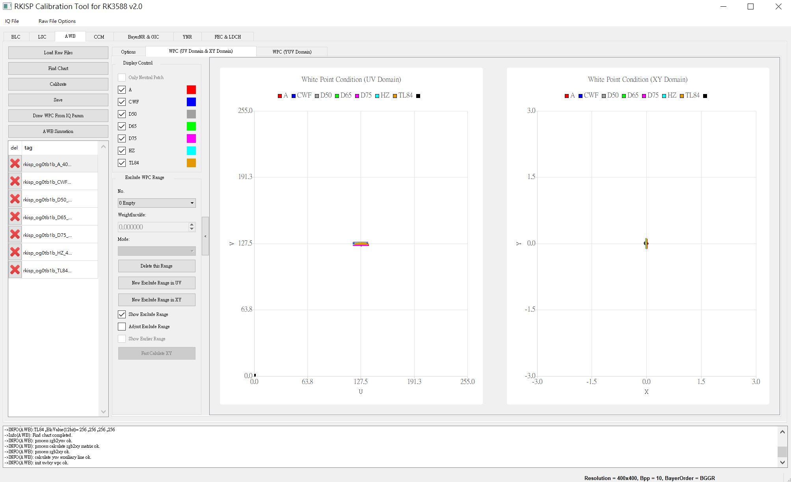
AWB校正後
白點條件驗證與微調 (AWB Simulation)：
點擊 AWB Simulation 導入 Raw 圖測試。
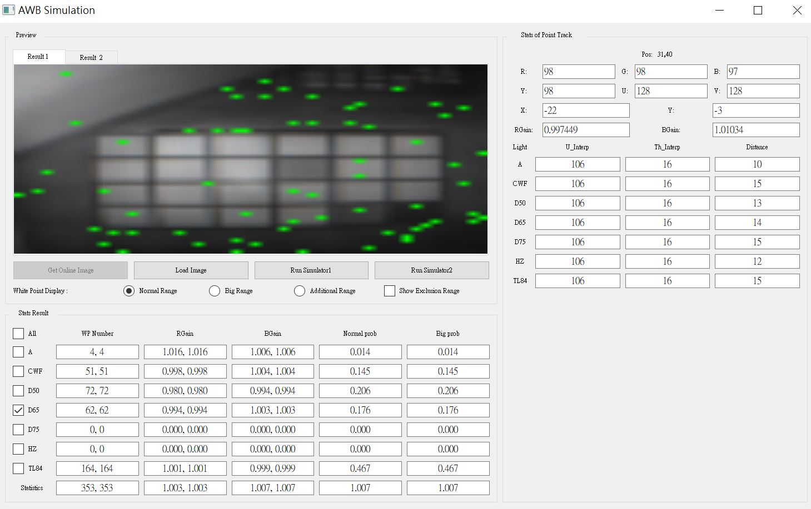
AWB Simulation 框選微調原則：手動拖曳 UV / XY 座標系中的框，確保色卡的中性灰/白區塊（第 19~24 號色塊）落在對應光源的框內，並儘量將非白點排除在框外。
連續性要求：所有黑體軌跡上光源的中框在 X 方向上需保持連續；色溫接近的光源中框在 Y 方向上需保持連續。
保存參數：確認各光源白點檢測合理後，點擊 Save 保存 AWB 參數至 JSON 文件中。
"TuningPara": {
"damp_enable": 1,
"illu_estim": {
"interp_enable": 0,
"default_illu": "A",
"weightRB": [1, 1],
"prob_limit": 0.2,
"frame_no": 8
},
"aCcmCof": [{
"name": "A",
"awbGain": [1.0126, 1.0001],
"minDist": 0.05,
"matrixUsed": ["A_74", "A_100"],
"matrixUsed_len": 2,
"gain_sat_curve": {
"gains": [1, 4, 8, 16],
"sat": [100, 100, 90, 50]
}三、 CCM (色彩校正矩陣) 標定步驟
CCM 模組透過 3 \times 3 矩陣校正 Sensor 的光學交叉響應，使拍攝色彩還原真實。
選擇 Gamma 曲線：
在進行 CCM 標定前，必須先確定系統使用的 Gamma 曲線（例如預設 Gamma 2.2），因為 Gamma 變更會直接影響標定出的色彩飽和度。
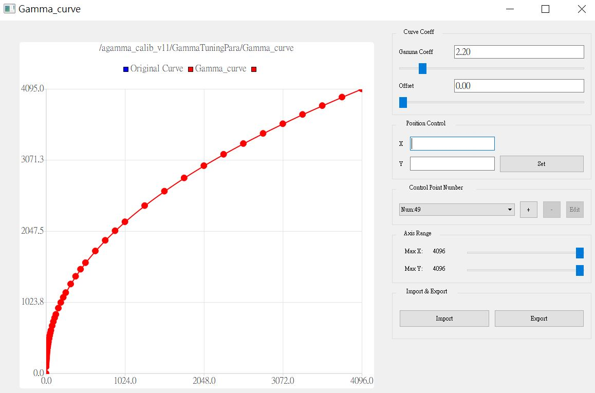
Gamma 曲線
導入 Raw 圖與色塊選取：
切換至 CCM 標籤頁，導入同樣 7 種光源的 Raw 圖，確認採樣區域精確落在 24 色塊內部且無框選到黑邊。
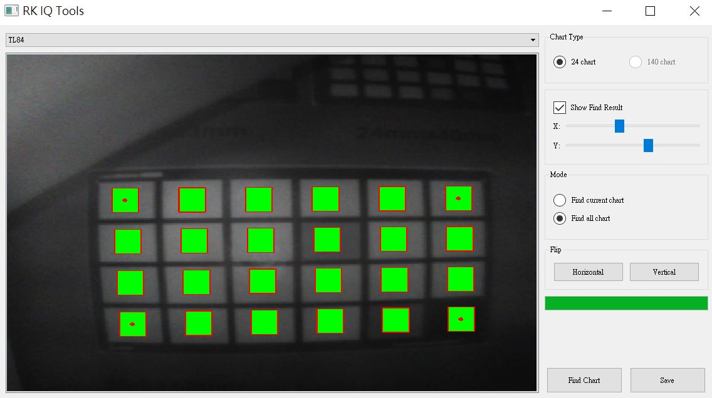
調整色塊位置
設定飽和度與色塊權重：
飽和度：通常會同時標定生成 100% 與 74% 兩組飽和度下的 CCM 矩陣。
權重微調：預設使用均勻權重；若希望特定色彩（如三原色 13~15 號、膚色 2 號）還原更準，可提高該色塊的權重（例如將三原色權重設為 8 或 16）。
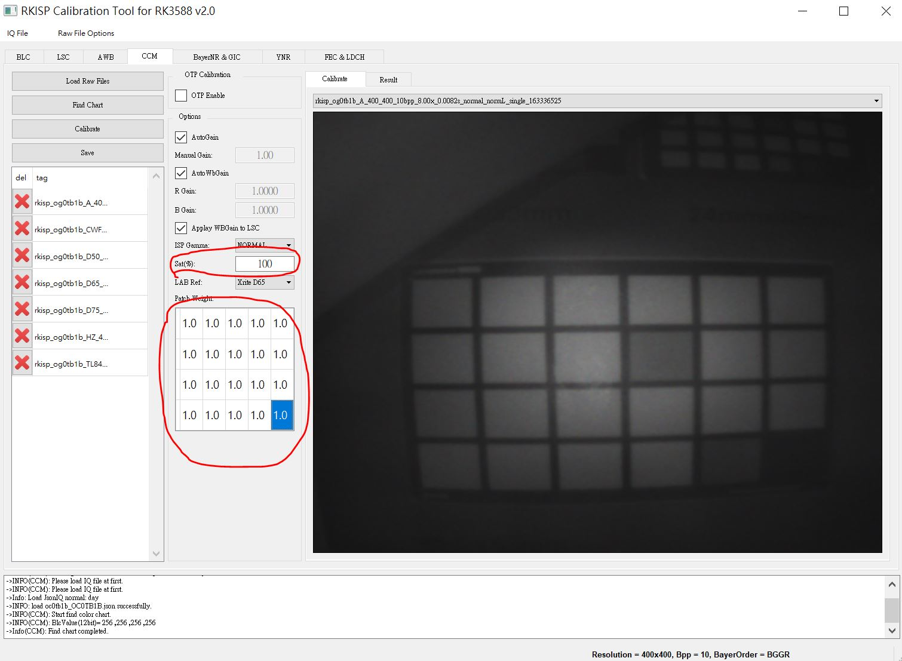
調整飽和度與色塊權重 計算矩陣與檢查色差圖 (Calibrate)：
點擊 Calibrate 生成各光源的 3 \times 3 CCM 矩陣與 RGB Offset 偏置。
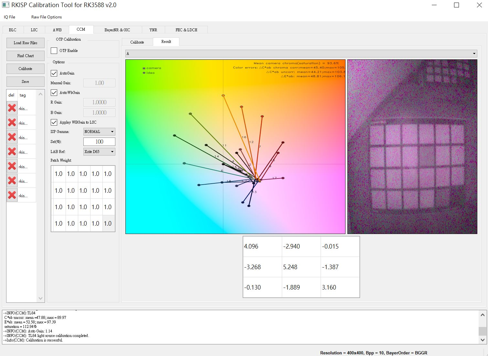
CCM Calibration 觀察輸出的 色差圖 (Color Error Chart)：
若 Camera 點比 Idea 點離原點更遠，代表該顏色飽和度偏高。
確認 13 ~ 15 號三原色色塊的色偏向量保持在可接受範圍內。
保存參數：點擊 Save 將生成的 14 組 CCM 矩陣（如 A_100, A_74, D65_100 ...）寫入 IQ JSON 檔的 ccm_calib 節點中。
"matrixAll": [{
"name": "A_74",
"illumination": "A",
"saturation": 74,
"ccMatrix": [0.9632, -0.0233, 0.06, -0.3153, 1.1992, 0.116, -0.0064, -0.637, 1.6435],
"ccOffsets": [0, 0, 0]
}, {
"name": "A_100",
"illumination": "A",
"saturation": 100,
"ccMatrix": [4.0965, -2.9404, -0.0155, -3.2682, 5.2483, -1.3866, -0.1305, -1.8892, 3.1597],
"ccOffsets": [0, 0, 0]
}, {四、 實景色彩微調與穩定度優化
防止白平衡震盪 (Tolerance 設定)：
若實景中色彩或白平衡來回輕微震盪，可在 JSON 的 tolerance 節點中調高 toleranceValue，當 wbGain 變化小於該閾值時不更新，以提升穩定度。
高 ISO 降飽和度 (ISO Linkage)：
高 ISO 環境下，強烈的 CCM 增益會大幅拉高彩色噪點。需在 JSON 檔的 gain_alphaScale_curve
"tolerance": { "lumaValue": [256, 512, 32768, 131072], "lumaValue_len": 4, "toleranceValue": [0, 0, 0, 0], "toleranceValue_len": 4 },或 gains-sat 中，設定高 Gain 下的 scale 為 0.8 ~ 0.9，適度降低暗光下的色彩飽和度。
重要說明 : 目前展示為 Mono 感測器（Monochrome Sensor，單色/黑白感測器）本身是無法透過單純的 ISP（影像訊號處理器）演算法「解析」出真實彩色影像, 所以在色彩還原調整上,無法解析出真實色彩,目前的說明只提供流程與調整的畫面.
六、 YNR（亮度降噪標定 ( YNR / MFNR) )
降噪系統採用分工明確的多級管線。完整的降噪流程包含 Raw 域多幀時域降噪 (MFNR / BayerTNR)、Y 域亮度空域降噪 (YNR) 以及 UV 域彩噪降噪 (CNR)。 各模組在硬體流水線中的位置順序為： Bayer2DNR ➔ BayerTNR (MFNR/3DNR) ➔ Demosaic ➔ YNR & CNR ➔ Sharpen (銳化)。
一、 MFNR / BayerTNR (Raw 域多幀時域降噪)
1. 模組功能與特點
作用：在 Raw 域利用當前幀與歷史 (IIR) 幀資料進行低頻與高頻的時域雙邊濾波。
優點：能大幅壓制靜止場景下的高 ISO 雪花噪點，且完全不損失畫面的靜態高頻細節與清晰度。
2. IQ JSON 關鍵參數 (bayertnr_v2)
lo_enable / hi_enable：低頻/高頻時域降噪開關。
lo_filter_strength / hi_filter_strength：低頻與高頻的運動判斷與降噪強度。數值越大，時域降噪越強。
soft_threshold_ratio：軟閾值比率，數值越大，保留的自然噪點越多。
3. 調優步驟
在高 ISO（如 ISO 1600 ~ 6400）環境下觀察畫面雪花噪點。
逐步調高
lo_filter_strength與hi_filter_strength。運動物體檢查：讓人物或物件在鏡頭前移動，觀察邊緣是否有拖影（Ghosting） 或 運動模糊。若拖影嚴重，需適度調低
hi_filter_strength或調整高頻運動判斷閾值。
二、 YNR (Y 域亮度降噪 - ynr_v3)
1. 模組功能與特點
作用：在 YUV 域針對亮度（Luminance）信號進行空域雙邊濾波、軟閾值去噪與邊緣保護。
特質：YNR 可以獨立控制高、中、低頻噪點。強度開得太大會導致畫面出現塗抹感（Muddy/Smear） 或 油畫感，使質感下降。
2. IQ JSON 關鍵參數 (ynr_v3)
low_bf1 / low_bf2：原圖 (3x3) 與上一幀縮略圖 (5x5) 的雙邊濾波強度。數值越大去噪越強。
low_thred_adj：低頻軟閾值調整力度，控制大塊面（如牆面、皮膚）的平滑度。
high_thred_adj / high_weight：高頻降噪軟閾值與高頻保留比例。
high_weight越大，保留的高頻細節越多，降噪越弱。rnr_strength (徑向降噪)：從圖像中心到四周 17 個點的降噪強度補償。專門用來壓制因 LSC（鏡頭陰影校正）邊角增益放大帶來的邊角噪點。
3. 調優步驟
先調低 ISO (ISO 50~100)：設定較小的
low_bf1，確保微弱紋理（如毛發、布料）不會被抹平。高 ISO 逐檔調優：隨 ISO 升高逐步加大
low_bf1與low_thred_adj。質感與細節平衡：若發現畫面變太平（塗抹過度），可調高
high_weight或降低low_bf1，保持微小顆粒噪點以維持真實質感。
進行 亮度降噪標定 (YNR / MFNR) 是 Rockchip ISP30（RK3588）獲得高品質噪聲模型（Noise Profile/Sigma Curve）的最核心步驟。標定生成的噪聲曲線能讓 Raw 域多幀時域降噪 (MFNR / BayerTNR) 與 YUV 域亮度降噪 (YNR) 準確識別圖像中哪些是硬體噪點、哪些是實際材質紋理。
第一階段：標定前置準備
前置模組必須已完成標定：
BLC（黑電平） 與 LSC（鏡頭陰影） 必須已標定完成並載入 JSON 檔。若 BLC 或 LSC 數據不準，會直接導致 YNR 噪聲曲線計算偏差。
實驗室環境與卡片：
環境：標準燈箱（建議切換至 TL84 或 CWF 光源，光照度約 800 lux）。
圖卡：使用 24 色階 / 灰階漸變卡（Gray Chart）。將漸變卡貼在燈箱背板中央，並調整相機位置使漸變卡儘量填滿畫面中心。
第二階段：使用 RK Capture Tool 拍攝專用 Raw 圖
YNR/MFNR 標定需要透過 Tool 擷取多組不同 Gain 檔位下的高光（High-Light） 與 低光（Low-Light） Raw 圖：
1. 設定與選取 ROI
開啟 RK Capture Tool 並連接板卡，Light 選擇 TL84（或 CWF），Module 名稱填寫 NR_Normal。
切換至 YNR Capture 頁面，拍攝一張預覽圖。
在右側預覽畫面中按右鍵選擇 Draw ROI，分別繪製兩個矩形框：
黑塊 (Black Block)：框選漸變卡上最黑的色塊區塊。
白塊 (White Block)：框選漸變卡上最亮的色塊區塊。
2. 分 Gain 檔位批量拍攝（遍歷 1x, 2x, 4x, 8x, 16x...）
針對每個 Gain 檔位（例如從 Gain=1.0 開始），需分別拍攝 Low-Light 與 High-Light 兩組：
低光組 (Low-Light) 拍攝：
將
Gain Range設定為當前檔位（如1.0 - 1.0）。勾選 Multi-Frame 與 Low-Light，將
Frame Number設為 32。設定目標閾值：
Black Block Mean Luma初次填寫約為BLC(8bit) + 1，White Block Mean Luma填寫約 30。點擊 Start YNR Capture。工具會自動比對平均像素值，達成目標後會產出帶有 _single（單幀）與 _multiple（32 幀疊加）各一張 Raw 檔。
高光組 (High-Light) 拍攝：
勾選 Multi-Frame 與 High-Light。
設定目標閾值：
Black Block Mean Luma填寫約 60，White Block Mean Luma固定為 255（注意白塊切勿過曝）。點擊 Start YNR Capture，取得該 Gain 檔位下的高光 single 與 multiple Raw 檔。
遍歷完成：將 Gain 改為 2x, 4x, 8x... 重複上述步驟，直到 Sensor 支援的最大 Gain 拍攝完畢。
第三階段：使用 RK Calibration Tool 計算噪聲曲線
拍攝完成後，進入 RK Calibration Tool 進行兩階段標定計算：
步驟 1：GIC & Bayer NR 標定（計算 Raw 域噪聲）
在 Calibration Tool 左上角
Edit Options設定 Raw 圖解析度、Bit 數與 Bayer 順序。切換至 GIC & Bayer NR 標籤頁，點擊 Load Raw Files 導入剛剛拍攝的所有 single 與 multiple Raw 檔。
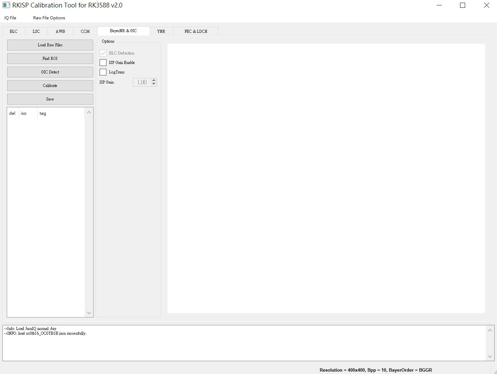
GIC Calibration 點擊 Find ROI，確保紅框精確覆蓋漸變卡各色塊。
點擊 Calibrate，工具會計算並繪製出 Raw 域的 BayerNR 噪聲曲線。點擊 Save 存檔。
步驟 2：YNR & MFNR 標定（計算 YUV 域噪聲）
切換至 YNR & MFNR 標籤頁，點擊 Load Raw Files 導入相同的 Raw 檔列表。
勾選 YNRCurve Print（可保存調試採樣點資料）。
點擊 Calibrate 開始計算，右側視窗會擬合出各 ISO 檔位下的 ynr sigma curve 噪聲曲線（包含 16 個亮度點對應的噪聲值）。
點擊 Save 保存結果至 IQ JSON 檔中（會寫入
ynr_v3與bayertnr_v2節點）。
第四階段：實用調優與參數控制 (Tuning)
標定完成後，標定數據（sigma 曲線）已寫入 JSON，接下來可針對 MFNR (BayerTNR) 與 YNR 進行實景微調：
1. BayerTNR (MFNR 多幀時域降噪微調)
lo_filter_strength / hi_filter_strength：分別控制低頻與高頻的時域降噪強度。
soft_threshold_ratio：軟閾值比率，數值越大保留的自然細節越多。
實景檢查：觀察運動物體（如移動的手或行車），若發現邊緣有拖影（Ghosting），需適度調低
hi_filter_strength。
2. YNR (Y 域亮度降噪微調)
low_bf1 / low_bf2：雙邊濾波強度，控制大面積平坦區（如皮膚、牆面）的平滑度。
low_thred_adj：低頻軟閾值調整力度，越大降噪越強。
high_thred_adj / high_weight：高頻降噪門限與高頻保留比例。若畫面出現塗抹感（油畫感），可調高
high_weight以補回紋理細節。rnr_strength (徑向降噪)：包含 17 個點的鏡頭中心到四周的降噪權重，專門用來補償 LSC 邊角增益帶來的暗角噪點。
三、 CNR (UV 域彩噪降噪 - cnr_v2)
1. 模組功能與特點
作用：針對 U/V 通道進行多尺度下採樣、中值濾波與雙邊濾波，消除紅綠彩噪與大塊色斑。
優點：CNR 的強度幾乎不會影響畫面的解析力與線條 sharpness。
注意點：CNR 力度過大會導致物體邊緣色彩滲透或飽和度下降（褪色）。
2. IQ JSON 關鍵參數 (cnr_v2)
hf_denoise_strength：高頻雙邊濾波去彩噪強度，清除細小紅綠雜點。
lf_denoise_strength：低頻雙邊濾波強度，清除大面積的色斑塊。
color_sat_adj：基於梯度的 UV 飽和度微調，值越小去彩噪效果越強。
thumb_denoise_strength：縮略圖層級的去彩噪強度。
3. 調優步驟
開啟高 ISO（如 ISO 3200/6400）畫面。
觀察暗部區域的彩色雜點（如黑牆上的紅綠細點）。
先調高頻：加大
hf_denoise_strength直到細小紅綠彩噪消失。再調低頻：若還有不均勻的大塊彩色斑塊，加大
lf_denoise_strength與thumb_denoise_strength。檢查邊緣與飽和度：觀察鮮豔物件（如紅花、綠葉）的邊緣，確認沒有出現色彩滲漏或飽和度明顯變淡的情況。
四、 四大模組實戰聯合調優順序 (Joint Tuning Strategy)
為了達到最佳的「清晰度與噪聲平衡」，請嚴格按照以下流程進行聯調：
第一步：暫時關閉 Sharpen (銳化)
銳化會放大前級的噪點，調優降噪時務必先關閉 Sharpen 或降至最低。
第二步：優先調大 CNR (彩噪降噪)
先把畫面上的紅綠彩色噪點徹底壓制乾淨。因為 CNR 不傷解析度，先清乾淨彩噪能讓後續亮度噪點的觀察更為清晰。
第三步：聯調 BayerTNR (MFNR) 與 YNR
利用 BayerTNR 消除靜止畫面的大部分噪點；
利用 YNR 平滑剩餘的空域亮度噪點，並觀察動態畫面，確保沒有嚴重的塗抹感與拖影。
第四步：最後開啟 Sharpen (銳化)
在降噪完成、畫面乾淨的前提下，開啟 Sharpen 將靜止物件（如文字、線條、細節輪廓）適度銳化補回。
七、 FEC / LDCH(畸變校正標定)
LDCH（鏡頭水平畸變校正） 與 FEC（魚眼全方位畸變校正） 是基礎標定流程的最後一步。這兩個模組主要用於修復廣角鏡頭或魚眼鏡頭產生的「桶形畸變」或「枕形畸變」，使原本彎曲的畫面邊緣線條恢復平直。
一、 LDCH 與 FEC 的概念與差異
LDCH (Lens Distortion Correction Hardware)：
作用：專門針對普通廣角鏡頭的水平方向畸變進行校正。
特點：硬體開銷較小，支援在 IQ JSON 中透過 correct_level (0 ~ 255) 直接調適校正拉伸強度。
FEC (Fisheye Execution Center)：
作用：針對超廣角或魚眼鏡頭進行水平與垂直 2D 全方位復原校正。
特點：需事先透過棋盤格標定，生成下採樣的像素座標對應網格表（Mesh File / Map 表）。
二、 第一階段：棋盤格標定圖拍攝規範
FEC/LDCH 標定不需要 Raw 圖，而是使用高清晰度的 RGB/YUV 影像（格式支援 JPG、BMP、PNG）：
圖卡準備：
使用標準黑白棋盤格（Checkerboard）。
角點計算方式：水平/垂直角點數量（Corners）等於排除最外圈黑白塊後，該方向上的黑白塊數量再減 1。
拍攝角度與姿勢（建議 5 ~ 10 張）：
位置覆蓋：拍攝棋盤格放置於畫面正中心、四周角落、邊界等不同位置的照片。
角度變異：包含正面平視、左右傾斜、上下傾斜等角度。
關鍵注意事項：
最外圈黑白塊不參與角點計算，但在預覽與拍照時絕對不能被畫面裁切或遮擋。
畫面必須聚焦清晰，棋盤格內部角點需完全清晰可見（至少需有 3 張以上能 100% 完整精確檢測出角點的照片）。
圖檔存放資料夾建議命名為
Sensor名_鏡頭名_解析度（例如oc0tb1b_lens_400x400），方便工具自動建立資料夾。
三、 第二階段：使用 RK Calibration Tool 標定與生成 Mesh 表
工具環境準備：
開啟 RK Calibration Tool，進入 FEC & LDCH 標籤頁。
關鍵前提：請確認標定工具
.exe執行檔的同級目錄下存在名為 result 的資料夾（若無請手動新建，否則工具無法存入產出的 Mesh 網格檔）。
導入標定圖與輸入參數：
點擊 Load Images 載入剛剛拍攝的一組棋盤格照片。
在介面上填入棋盤格參數：
Horizonal Corners：內圈水平角點數量。
Vertical Corners：內圈垂直角點數量。
Square Size：棋盤格單個方格的實際物理尺寸（單位：
mm）。
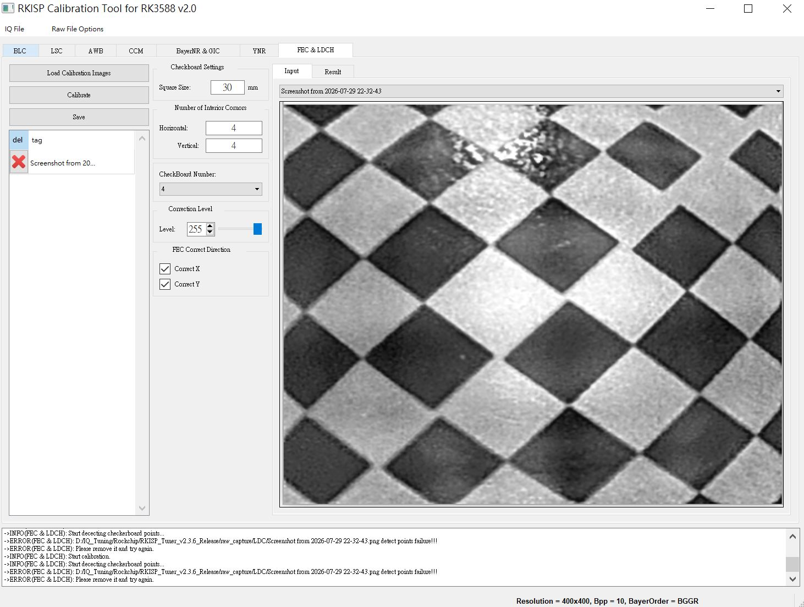
LDC Calibration
執行標定計算 (Calibrate)：
點擊 Calibrate 按鈕。
工具會自動搜尋每張照片中的角點，並在右側 Result 視窗標記綠色角點。
品質檢查：若某張照片角點檢測出錯（如紅框偏移），可在列表中點擊 del 將該張異常照片刪除後重新 Calibrate。
輸出標定結果與 Mesh 網格：
標定成功後，左側 Log 視窗會顯示相機內參與畸變參數：
中心座標 ( cx, cy )：光學中心偏移點。
畸變係數 ( a0, a2, a3, a4 )：鏡頭多項式畸變係數。
工具會自動在
result/資料夾下生成下採樣的 LDCH / FEC Mesh 映射檔。
保存參數：點擊 Save 保存結果。
四、 第三階段：IQ JSON 檔案參數寫入與設定
標定生成的網格檔與參數需寫入 IQ JSON 檔（如 oc0tb1b_OC0TB1B_default.json.txt）對應的節點中：
1. LDCH 節點設定 ( aldch / RK_MODULE_LDCH )
"aldch": {
"param": {
"aldch_en": 1,
"correct_level": 255 // 0~255，值越大拉直效果越強，通常設為 255 或依需求微調
}
}
2. FEC 節點設定 ( afec / RK_MODULE_FEC )
"afec": {
"param": {
"fec_en": 1,
"meshfile": "oc0tb1b_lens_400x400.bin", // 填入 result 目錄下生成的 Mesh 檔名
"correct_level": 255,
"light_center": [200.5, 200.5], // 填入標定出的 [cx, cy] 光學中心
"coefficient": [0.0, 0.0, 0.0, 0.0] // 填入標定出的 [a0, a2, a3, a4] 係數
}
}2. 調整項目內容 (實時線上調優項目)
一、AEC：調整曝光 Route、目標亮度、抗閃爍（Anti-Flicker）、HDR 曝光比率與動態範圍壓縮（ADRC/AMerge）。
自動曝光 (AE / AEC, Auto Exposure Control) 的主要任務是根據環境光線變化，自動計算並分配最佳的曝光時間 (Exposure Time) 與感光增益 (Gain)，使影像亮度維持在合理且穩定的目標範圍內。 在進行 AE 調優前，需確認 Sensor 驅動資訊正確，且 BLC (黑電平)、AWB (白平衡)、LSC (陰影校正) 等基礎模組已完成標定與校正。
第一階段：Sensor 曝光參數與同步校驗 (SensorInfo & SyncTest)
核對 SensorInfo 基礎參數：
確認 Sensor Datasheet 中的曝光時間極限（maxExpTime / minExpTime）、增益極限（maxGain / minGain）以及 Time2Reg 與 Gain2Reg 轉換公式無誤。
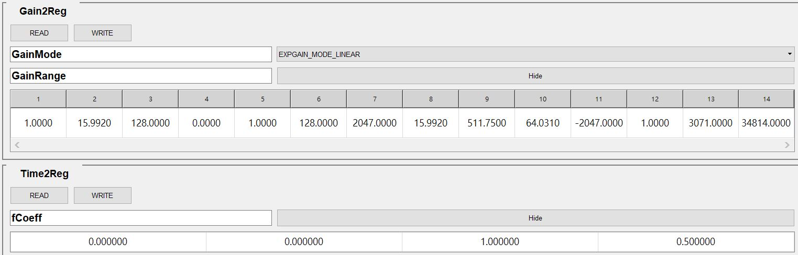
sensor info 開啟 SyncTest 測試曝光線性度：
在 IQ JSON 檔中開啟 AecSyncTest 功能。
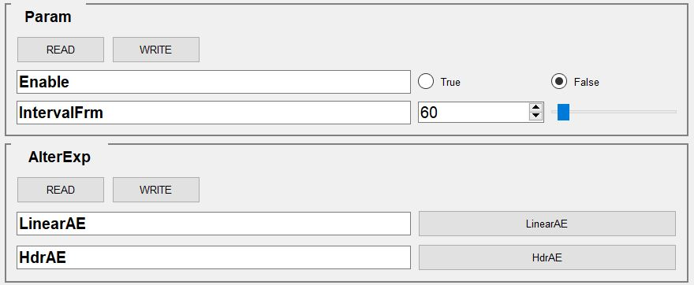
AecSyncTest 功能 系統會循環發送 N 組不同的曝光時間與增益組合，用來測試 Sensor 的曝光時間、增益及 DCG (雙原生增益) 切換是否在同一幀精確生效，並排查畫面是否有閃爍或增益不線性問題。
第二階段：配置 AE 網格權重表 (AecGridWeight)
15 \times 15 統計網格分割：
ISP30 硬體會將畫面分割為 15 \times 15 共 225 個區域網格。
設定權重分配 (Weight Grid)：
根據相機安裝場景（如安防監視、人臉辨識、車載行車紀錄器），為不同網格給予 0 ~ 63 的權重比重。
常見設定：將畫面中央區域（關心主體/人臉/車牌位置）設定較高權重（如 10 ~ 14），畫面四周或天空區域給予低權重（如 0 ~ 3），避免天花板燈光或天空影響整體畫面主體的亮度。
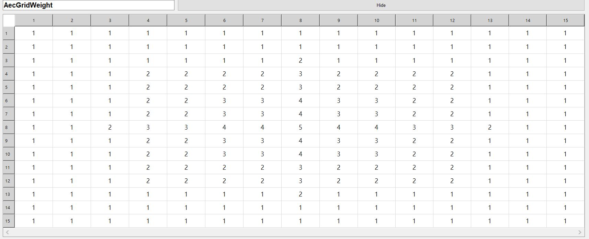
AE 網格權重表
第三階段：配置 AE 曝光路徑分解 (AE Route)
AE Route 決定當曝光量需求增減時，曝光時間（Time）與增益（Gain）的分配順序與比例：
路徑點陣對 (TimeDot / GainDot)：
在 JSON 檔的 LinearAeCtrl -> Route 節點中，設定 TimeDot (曝光時間陣列) 與 GainDot (增益陣列)。
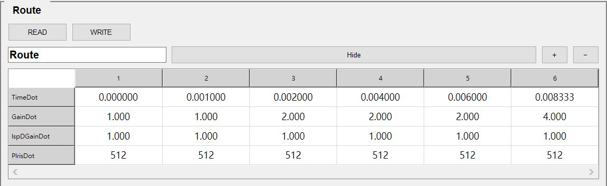
TimeDot / GainDot 不同應用場景的 Route 策略：
高速抓拍 / 車牌辨識場景：優先拉大 Gain、嚴格限制曝光時間（例如將時間限制在 2 ~ 4ms 以內），防止運動物體產生拖影與模糊。
低照度 / 夜視安防場景：優先拉長曝光時間，最後才增加 Gain，以最大程度抑制高 ISO 帶來的雜訊與噪點。
第四階段：設定目標亮度與過曝控制 (Target Luma & OverExpCtrl)
基礎目標亮度 (SetPoint / DynamicSetpoint)：
設定平坦場景下的目標亮度值（例如 8-bit 下中央區域目標亮度控制在 40 ~ 60 左右）。
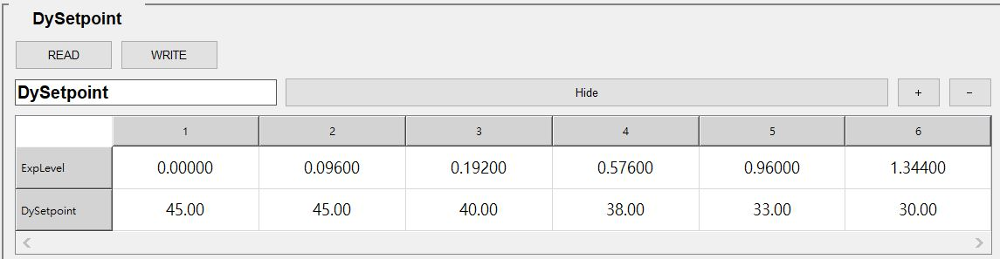
SetPoint / DynamicSetpoint 高光過曝控制 (OverExpCtrl) 與背光補償 (BackLightCtrl)：
逆光/高對比場景：開啟高光控制，當畫面出現高亮度物件（如杯子、陶瓷、燈光）時自動降低整體曝光，避免高光區域出現大面積死白。
策略模式 (StrategyMode)：可依需求切換為低光優先 (AECV2_STRATEGY_MODE_LOWLIGHT) 或高光優先策略。
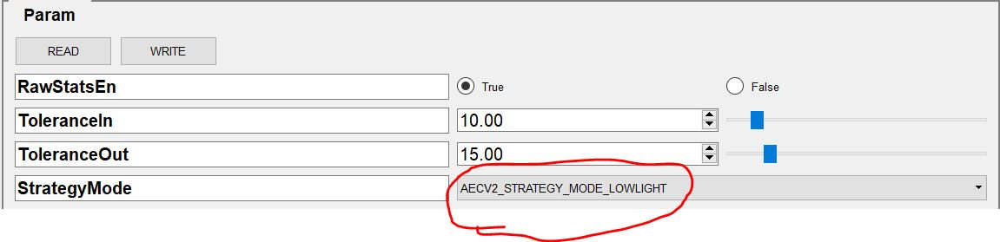
StrategyMode
第五階段：控制 AE 收斂速度、容忍度與防閃爍 (Speed, Tolerance & Anti-Flicker)
死區容忍度 (ToleranceIn / ToleranceOut)：
設定 ToleranceIn（例如 10）與 ToleranceOut（例如 15）。
當實際畫面亮度與目標亮度的差值小於 ToleranceIn 時，AE 停止微調，防止畫面亮度頻繁輕微抖動（呼吸效應）。
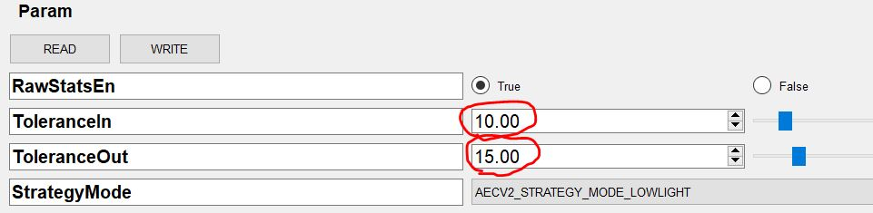
ToleranceIn / ToleranceOut 阻尼收斂速度 (AeSpeed & Damp)：
透過 DampDark2Bright（暗到亮）與 DampBright2Dark（亮到暗）調整收斂平滑度。
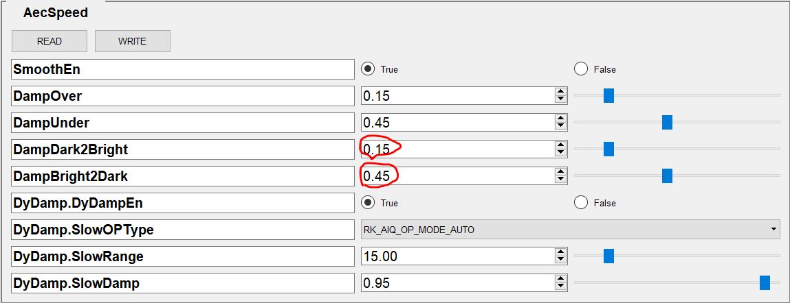
AeSpeed & Damp 行車記錄器 / 運動相機：調高收斂速度，以適應快速出入隧道或光線劇烈變化的場景。
定點安防監視：調低收斂速度（加強阻尼），確保光線微變時畫面漸進平滑過渡。
交流電防閃爍 (AecAntiFlicker)：
針對 50Hz (如 10ms/20ms) 或 60Hz (如 8.33ms/16.66ms) 人工光源，將曝光時間限制為平整步長，消除滾動條紋 (Flicker)。
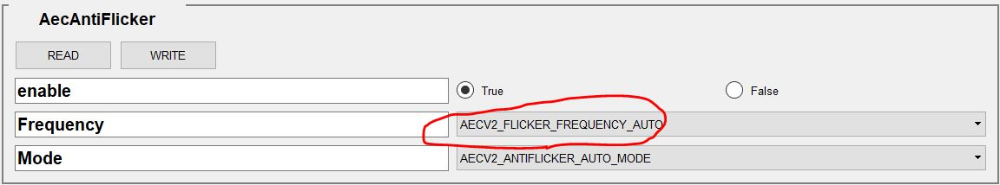
AecAntiFlicker
💡 驗證與排查建議： 在 RKISP 3A AnalyzerTool 或控制台開啟 AE 日誌後，可觀察 MeanLuma (當前平均亮度) 與 LumaDeviation (與目標亮度的偏差值) 的動態變化，並透過燈箱開關燈測試 AE 的收斂時間與平滑度。
二、AWB：微調偏色修正（CT Line / CRI Line）、白點權重與穩定度門檻（Tolerance）。
AWB（自動白平衡） 完成基礎標定後，若在特定環境下出現整體偏色（如偏綠/偏紫、偏冷/偏暖）、白點被雜色干擾，或色彩來回微幅震盪（呼吸效應），就需要進行進階的 WBGain 色調微調、白點權重控制 與 穩定度門檻 (Tolerance) 調整。
一、 偏色微調：CT Line / CRI Line 調整流程 (wbGainAdjust)
功能與座標系概念
CT (Colour Temperature - 色溫軸)：橫軸代表相對色溫。往左調整畫面變冷（偏藍），往右調整畫面變暖（偏黃/紅）。
CRI (Colour Rendering Index - 顯色/色調軸)：縱軸代表綠/紫偏色。向上拖動畫面偏綠，向下拖動畫面偏紫。
在 IQ Tuner 工具中，系統會將輸入的色溫與 CRI 繪製成 N \times M 的網格點陣列。
工具操作與微調步驟 (使用 RKISP Tuner)
進入控制介面：在工具中打開 AWB -> WBGain Adjust 頁面，勾選 Enable: On。
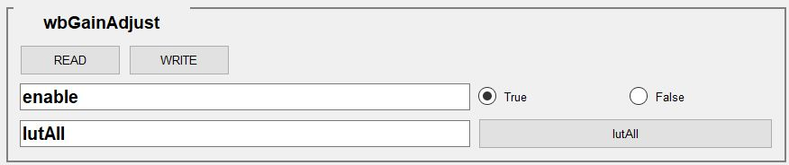
WBGain Adjust 選擇模式 (Drag Method)：
CT Line Only（整體偏冷/偏暖調整）：
作法：當某一色溫（例如 2000K 低色溫）下畫面太紅/太暖，選擇 CT Line Only 模式，點擊 CCT=2000K 附近的網格點向左拖動。
效果：該色溫下輸入的 AWB Gain 會被強制修正為較冷的色溫輸出，達成降溫/校正偏暖的效果。
CRI Line Only（整體偏綠/偏紫校正）：
作法：若日光或日光燈下畫面整體偏紫（例如 CRI=0.5 區域），選擇 CRI Line Only 模式，點擊對應網格點向上拖動。
效果：提高 G 通道權重，將紫味拉回正常中性色；反之若畫面偏綠，則向下拖動壓制綠色。
CT Point Only / CRI Point Only：適用於僅對特定極端色溫下的單點進行精準修正。
JSON 檔案中的對應節點： 修正結果會保存至 autoExtPara -> wbGainAdjust -> lutAll 中（包含 ct_out 與 cri_out 陣列）。
二、 白點權重調整 (Luma Weight & Block Weight)
當場景中存在大量過亮（如天空/燈光）或過暗（如陰影噪點）的區域干擾 AWB 計算時，可透過權重機制予以抑制。
白點不同亮度權重 (wpDiffLumaWeight)
作用：避免極暗或過曝區域的偽白點干擾 AWB，給予中間適當亮度區間（如 80 ~ 224）更高的信任權重。
IQ JSON 關鍵參數 (autoPara -> wpDiffLumaWeight)：
enable：設為 1 開啟亮度權重功能。
wpDiffWeiEnableTh：包含 wpDiffWeiNoTh（白點數量門檻）與 wpDiffWeiLvValueTh（環境亮度門檻），達到條件才啟用。
wpDiffwei_y：將亮度分為 9 個節點（8 個 bin）。
perfectBinConf / perfectBin：標記高可信度的亮度區間（設為 1 的 bin 代表高可信度）。
wpDiffWeightLvSet：依據不同環境亮度 (LvValue) 與高可信度白點占比，賦予各亮度區間 0.0 ~ 1.0 的加權權重。
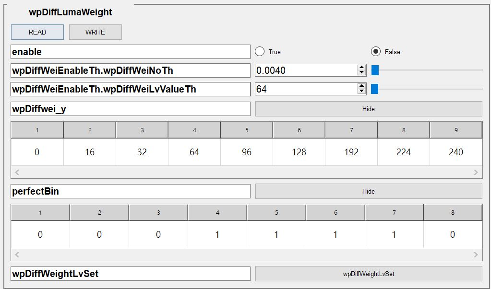
wpDiffLumaWeight 分塊空間權重 (wpDiffBlkWeight)
作用：對畫面 15 \times 15 共 225 個區塊分別給予權重（0 ~ 63），提升主體區域白點的參考比重。
JSON 參數：
wpDiffBlkWeiEnable：設為 1 開啟。
wpDiffBlkWeight：225 個整數陣列，通常將中央區域設為較高權重（如 30 ~ 63），四周邊角設為低權重（如 6 ~ 10）。
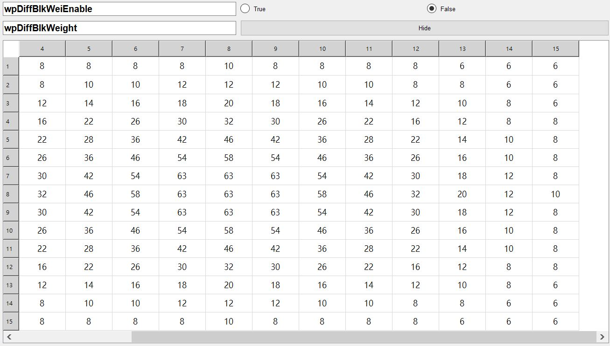
wpDiffBlkWeight
三、 AWB 穩定度門檻與收斂平滑度 (Tolerance & Damp)
在光線微小變化或相機輕微移動時，若 AWB 頻繁微調會造成畫面亮度與色彩的「呼吸效應」或輕微閃爍。
更新容忍度 (tolerance)
作用：當近幾幀計算出的 AWB Gain 變動差值小於 toleranceValue 時，強制鎖定並繼續套用前一幀的 wbGain，防止畫面色溫小幅抖動。
IQ JSON 關鍵參數 (autoExtPara -> tolerance)：
lumaValue：不同環境亮度檔位。
toleranceValue：容忍度門檻（取值範圍 0.0 ~ 1.0，預設通常設為 0.05 ~ 0.1）。
調優建議：若畫面在靜止場景下色彩來回震盪，可適度提高 toleranceValue（例如從 0.02 調高至 0.05）；若希望光線變化時反應更敏捷，則適度調低。
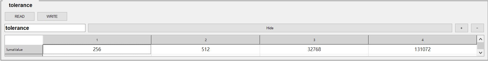
tolerance
執行幀間隔 (runInterval)
作用：控制 AWB 演算法隔幾幀執行一次（intervalValue）。適度拉長執行間隔可降低 CPU 負載並提高穩定度。
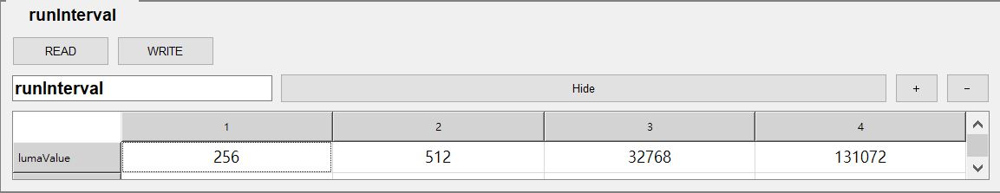
intervalValue
幀間平滑因子 (dampFactor / awb_smooth_factor)
作用：控制 AWB Gain 在幀與幀之間的平滑過渡速度。
調優建議：平滑係數越大，目前新計算出的 AWB 權重越低，畫面色彩變化越平緩漸進；若出入不同色溫場景需要快速收斂，可降低平滑係數。
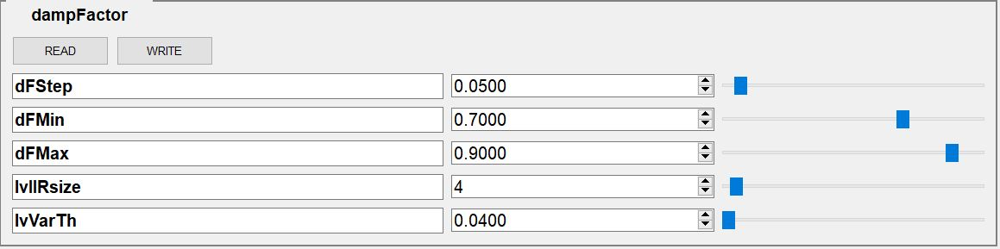
dampFactor
💡 實務微調 SOP 總結
1. 先校色（CT/CRI Line）：在標準光源或實景下觀察，若整體偏綠/紫，用 CRI Line 拖動拉平；若偏冷/暖，用 CT Line 調整。
2. 再控權（Luma/Block Weight）：若逆光或夜間高光處導致 AWB 算錯色溫，開啟 wpDiffLumaWeight 將高光/暗區權重降低。
3. 最後止震（Tolerance）：若畫面色彩微幅閃爍，提高 toleranceValue 鎖定近幀 Gain。
三、畫質與對比度微調：
主要模組：Demosaic、GIC、YNR、CNR、Sharpen、3DNR (BayerTNR)、DPCC。
質與對比度微調（清晰度與降噪平衡） 是 ISP 調優的最後一個核心階段。 整體調優遵循 「清晰度優先，先表現細節再降噪平衡」 的原則：在調優降噪模組前，先關閉 Sharpen（銳化）或降至最低，將靜止場景的細節呈現出來，再依照流水線（Pipeline）順序依次調適各降噪模組，達到清晰度與噪點的平衡。
ISP30 畫質與降噪流水線順序 (Pipeline)
[Raw 域] DPCC ➔ Bayer2DNR ➔ BayerTNR (3DNR) ➔ GIC
│
[RGB 域] Debayer (Demosaic)
│
[YUV 域] YNR & CNR ➔ Sharpen (銳化)
步驟 1：Demosaic (去馬賽克/Debayer) 細節插值與偽色控制
功能與重要性：Demosaic 是 Raw Bayer 圖轉 RGB 的核心插值演算法，是圖像基本紋理細節的第一道關口。
微調步驟：
低 ISO 解析力驗證：在實驗室 D65 光源（ISO 50）下，對準 ISO 解析度卡 與 星圖 (Star Chart)。
高低頻權重分配：微調
debayer_thed0與debayer_thed1（控制高低頻權重選取的概率門檻），使高頻紋理順利插值出來。濾波與偽色抑制：微調
debayer_filter1/2(梯度濾波器) 與debayer_cnr_strength（色差圖濾波強度），壓制黑白條紋邊緣產生的摩爾紋（Moiré）與偽色。全 ISO 遍歷：檢查高 ISO 下插值出來的噪點型態是否細碎且平穩。
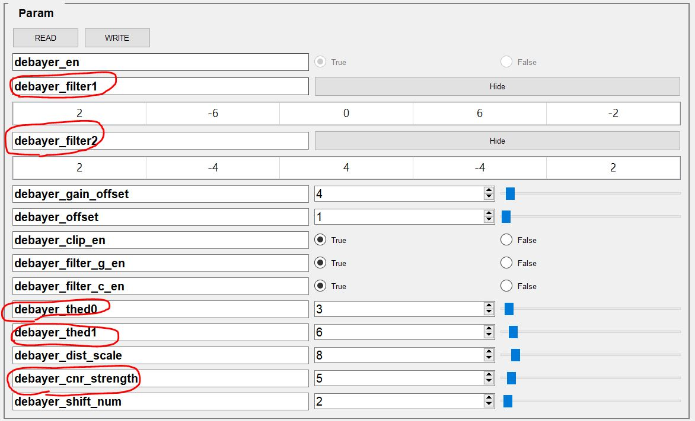
去馬賽克/Debayer
步驟 2：GIC (綠通道平衡校正)
功能：校正 Bayer 陣列中 Gr 與 Gb 兩個通道的響應失衡，消除拉亮或高對比邊緣處的網格狀偽影。
微調步驟：
補償強度：調適
gr_ration與全局補償強度，壓制畫面高光處的網格偽影。紋理保護：調整
min_busy_thre（高對比不規則紋理檢測）。值越大，被判定為繁忙紋理區域越不進行 GIC 處理，防止破壞真實高頻細節。上限保護：設定
maxCorV（補償上限），避免平坦區過度校正產生拉絲感。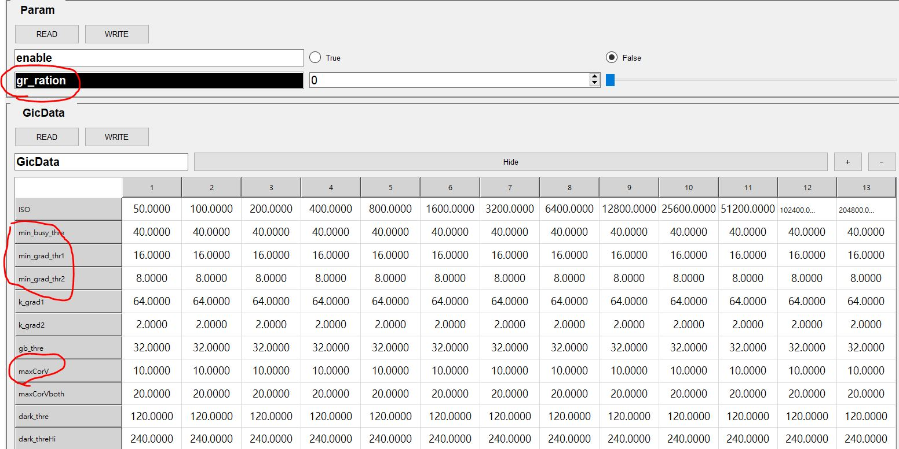
綠通道平衡校正
步驟 3：DPCC (動態與靜態壞點校正)
功能：消除 Sensor 的靜態壞點與高 ISO 下產生的動態壞點。
微調步驟：
分照度設定：高照度（低 ISO）時開弱，防止誤剔高頻細節；低照度（高 ISO）時調高強度。
Fast_mode 等級調適：
Single_level (0~10)：校正單個孤立壞點。
Double_level (0~10)：校正 1x2、2x1 等相鄰雙壞點簇。
Triple_level (0~10)：校正 3 個以上的相鄰壞點簇。
細節保護：檢查星圖中心與微小文字，確保未將正常高頻像素誤判為壞點抹除。
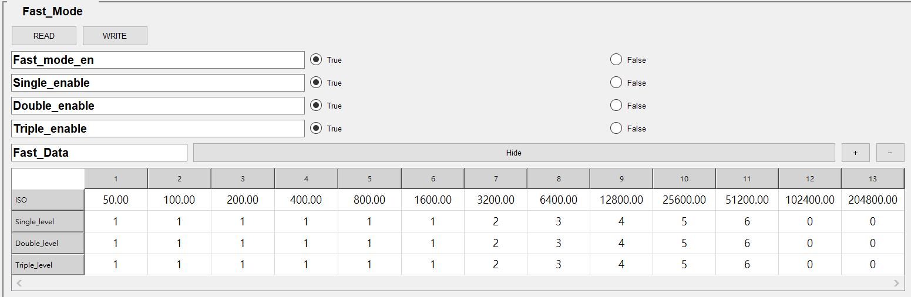
動態與靜態壞點校正
步驟 4：3DNR / BayerTNR (Raw 域時域多幀降噪)
功能：在 Raw 域將當前幀與歷史幀（IIR）分為低頻層與高頻層分別進行多幀降噪，完全不損失靜態畫面的高頻細節。
微調步驟：
關閉後級：暫時關閉 YNR 與 Sharpen，專注觀察 Raw 域時域效果。
降噪強度：調高
lo_filter_strength（低頻）與hi_filter_strength（高頻）壓制靜態雪花噪點。運動拖影對比：觀察動態物體（如移動的人手或車輛邊緣）。若有明顯 拖影 (Ghosting) 或運動模糊，需適度調低
hi_filter_strength或調整高頻差異閾值hidif_th。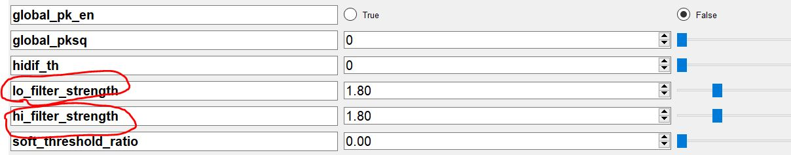
Raw 域時域多幀降噪
步驟 5：CNR (彩噪降噪) 與 YNR (亮度降噪)
1. CNR (UV 域彩噪降噪)
特點：CNR 的強度幾乎不傷解析力，應優先把紅綠彩噪壓制乾淨。
步驟：調高
hf_denoise_strength（高頻彩噪）與lf_denoise_strength（低頻大塊色斑），並檢查鮮豔邊緣是否發生色彩滲漏或褪色。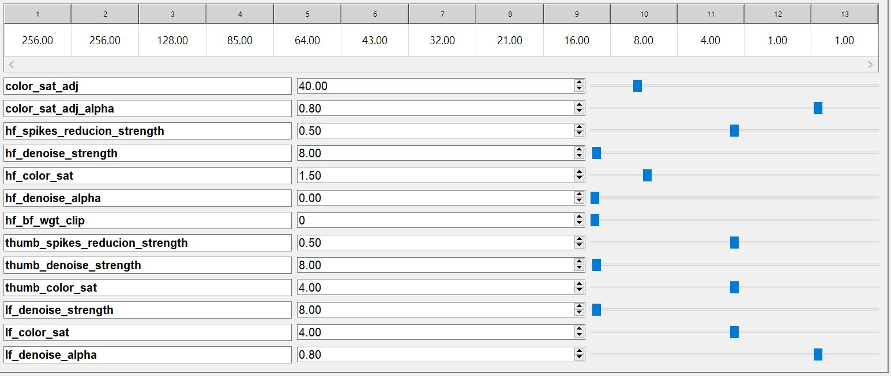
UV 域彩噪降噪
2. YNR (Y 域空域亮度降噪)
平坦區降噪：調整
low_bf1/2與low_thred_adj（低頻軟閾值），控制皮膚或牆面大塊平坦區的平滑度。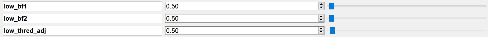
平坦區降噪 細節保留：調整
high_weight與high_thred_adj（高頻保留比率）。若畫面出現塗抹感（油畫感），調高high_weight補回微小顆粒質感。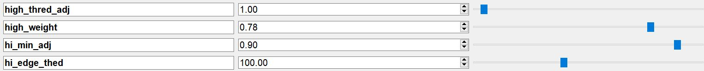
細節保留 邊角噪點補償：調整
rnr_strength（17 個點的徑向強度），專門補償 LSC（陰影校正）邊角拉亮帶來的額外噪點。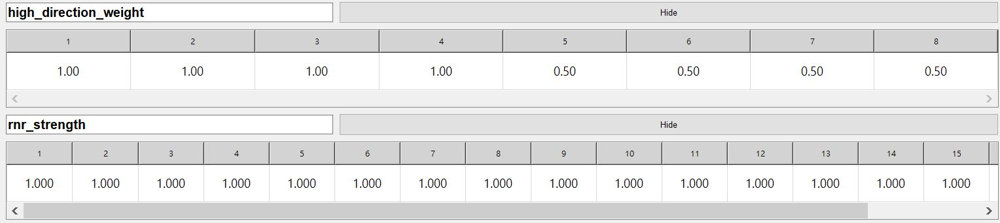
邊角噪點補償
步驟 6：Sharpen (銳化) 與 ISO 聯動總驗證
功能：對圖像高頻細節進行提取、預濾波、銳化增強與噪聲抑制。
微調步驟：
邊緣與細節增強：調高
sharp_ratio與local_sharp_strength，將靜止場景（如細線、文字、小熊毛髮、星圖邊緣）的銳度增強出來。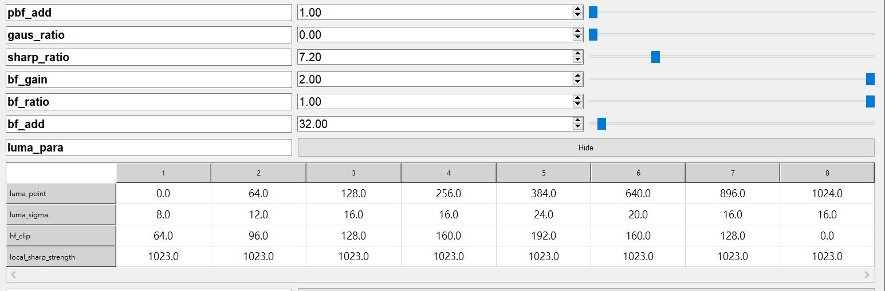
邊緣與細節增強 銳化噪點抑制：調整預濾波與高斯雙邊濾波參數（
pbf_gain,pbf_ratio,gaus_ratio,bf_gain），防止銳化將前級微弱噪點放大成黑白白邊或粗糙噪點。銳化噪點抑制 綜合 ISO 聯動驗證：在各 ISO 檔位（ISO 50 ~ 高 ISO）下綜合檢查，確保低 ISO 畫面清晰銳利、高 ISO 噪點平滑無拖影，達成清晰度與噪聲的最終平衡。